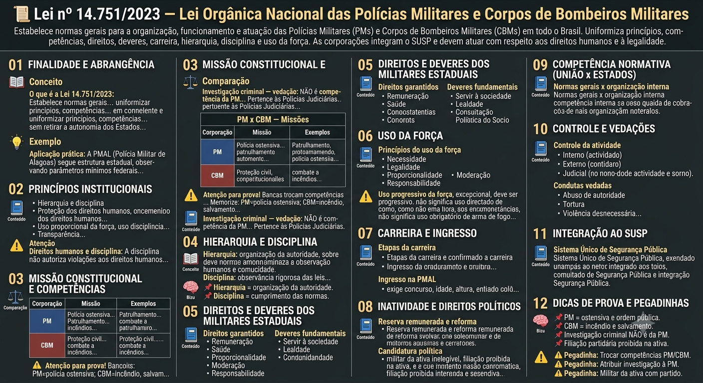
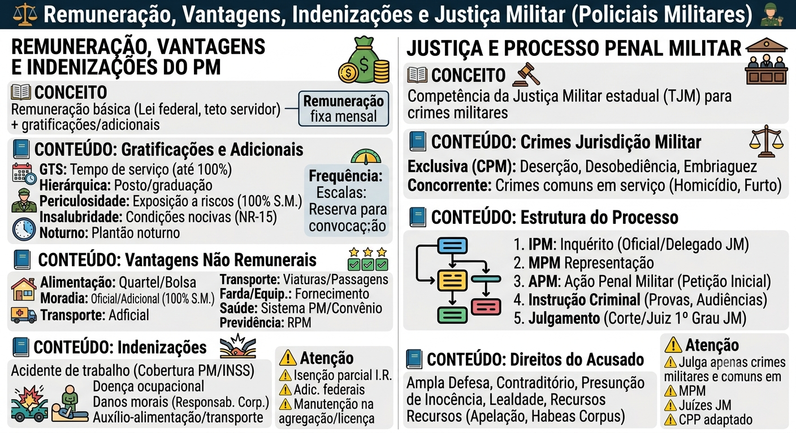

O que é o Estatuto da PMAL
O que é o Estatuto da PMAL
O Estatuto dos Policiais Militares de Alagoas é a Lei Estadual nº 5.346, de 26 de maio de 1992. Seu objetivo é regular a situação, deveres, direitos e prerrogativas dos policiais militares do Estado. A Polícia Militar de Alagoas é uma instituição permanente, organizada com base na hierarquia e disciplina, subordinada administrativa e operacionalmente ao Governador do Estado, incumbida da polícia ostensiva e da preservação da ordem pública.
Situação prática
Situação prática
Um Sargento determina que você revista um veículo. Você obedece (disciplina) seguindo a técnica (dever funcional). Se a situação for injusta, o correto é obedecer e, depois, representar contra a ordem ilegal — nunca desobedecer abertamente.
Hierarquia
Hierarquia
A hierarquia é a ordenação da autoridade nos diferentes níveis dentro da estrutura policial militar. É a escala de comando da Corporação — Soldado, Cabo, Sargento, Oficial — e constitui a base da PM.
Disciplina
Disciplina
Disciplina é a rigorosa observância e acatamento integral das leis, regulamentos, normas e dispositivos que fundamentam a Organização Policial Militar. É o pilar fundamental da instituição.
Gatilho mental
Gatilho mental
📌 Hierarquia = organização da autoridade.
📌 Disciplina = cumprimento das normas.
Requisitos para ingresso
Requisitos para ingresso
O ingresso na Polícia Militar de Alagoas é facultado a todos os brasileiros, sem distinção de raça, sexo, cor ou credo religioso, mediante aprovação em concurso público, desde que observadas as seguintes condições:
Observação
Observação
A carreira de Oficial é privativa de brasileiro nato. Os limites de idade podem ser alterados por lei.
Conceitos
Conceitos
Cargo: o posto ou graduação (ex.: Soldado PM).
Função: o exercício do cargo, através do conjunto dos direitos, obrigações e atribuições do policial militar em sua atividade profissional específica.
Direitos e prerrogativas
Direitos e prerrogativas
Os direitos e prerrogativas dos Policiais Militares são constituídos pelas honras, dignidade e distinção devida aos graus hierárquicos e cargos exercidos. Incluem:
Deveres e obrigações
Deveres e obrigações
São deveres dos Policiais Militares aqueles emanados de vínculos racionais e morais que os ligam à comunidade e à segurança. Incluem:
Responsabilidade do militar
Responsabilidade do militar
O policial militar responde integralmente pelas decisões que tomar, pelas ordens que emitir e pelos atos que praticar. No cumprimento de ordens recebidas, o executante responde pelas omissões, erros e excessos que cometer (ordem manifestamente ilegal não deve ser cumprida).
Critérios e condições
Critérios e condições
A Lei Estadual nº 6.514, de 23 de setembro de 2004, estabelece os critérios e as condições que asseguram aos militares estaduais da ativa o acesso à hierarquia militar, mediante promoção:
Praças e Oficiais
Praças e Oficiais
A lei aplica-se a Soldados, Cabos, Subtenentes, Oficiais e ao Corpo de Bombeiros Militar.
Reserva remunerada e reforma
Reserva remunerada e reforma
A inatividade (passagem para a reserva remunerada ou reforma) ocorre por:
Contagem de tempo
Contagem de tempo
O tempo de serviço prestado à iniciativa privada não pode ser computado para fins de promoção, sendo contado exclusivamente para fins de inatividade.
Reserva x Reforma
Reserva x Reforma
Reserva Remunerada: decorre do tempo de serviço; permanência vinculada à Corporação; pode ser convocado.
Reforma: decorre de incapacidade definitiva ou outras hipóteses legais; vínculo funcional encerrado para convocação; não retorna ao serviço ativo.
Afastamentos temporários
Afastamentos temporários
São considerados afastamentos temporários do serviço:
- Férias: até 30 dias;
- Núpcias (casamento): 8 dias;
- Luto: 8 dias;
- Instalação: até 5 dias;
- Trânsito: 24 ou 48 horas, conforme o caso.
Licenças previstas
Licenças previstas
O Estatuto prevê as seguintes licenças:
- Especial (3 meses a cada 5 anos de serviço);
- Para tratar de interesse particular (sem remuneração, até 2 anos, só para estáveis);
- Para tratamento de saúde;
- Para acompanhar pessoa da família;
- Gestante (licença-maternidade);
- Paternidade;
- Por núpcias;
- Por luto.
Ausente, Desertor e Desaparecido
Ausente, Desertor e Desaparecido
Ausente: PM que deixa de comparecer à OM ou se afasta sem autorização por mais de 24h e menos de 8 dias consecutivos.
Desertor: PM que permanece ausente por mais de 8 dias consecutivos (crime militar).
Desaparecido (extraviado): PM cujo paradeiro é ignorado por mais de 8 dias em razão de naufrágio, sinistro aéreo, catástrofe ou outro acidente oficialmente reconhecido.
Agregação — Conceito
Agregação — Conceito
Agregação é a situação em que o policial militar da ativa deixa de ocupar vaga na escala hierárquica, permanecendo sem número, para exercer cargo ou função comissionada, eletiva ou temporária. O agregado mantém o vínculo com a Corporação, mas fica desvinculado do quadro de efetivos. A agregação é sempre temporária e revogável, podendo ser concedida ou revogada pela autoridade competente.
Hipóteses de Agregação
Hipóteses de Agregação
A agregação ocorre nas seguintes hipóteses:
Reversão — Conceito
Reversão — Conceito
Reversão é o retorno do policial militar agregado à ativa, à sua vaga na escala hierárquica, após cessar o motivo que deu origem à agregação. O PM agregado que retorna à ativa recupera seu posto, patente e direitos, podendo ser readaptado às necessidades da Corporação.
Hipóteses de Reversão
Hipóteses de Reversão
A reversão ocorre nas seguintes hipóteses:
Efeitos da Agregação e Reversão
Efeitos da Agregação e Reversão
Durante a agregação, o PM mantém o vínculo com a Corporação, mas não ocupa vaga na escala hierárquica. O tempo de serviço é contado normalmente para fins de inatividade. Na reversão, o PM retorna à ativa com o mesmo posto e patente, podendo ser readaptado às necessidades da Corporação. A agregação não gera perda de vantagens ou direitos, mas pode afetar a progressão hierárquica.
Conselho de Justificação x Conselho de Disciplina — Composição e Prazos
Conselho de Justificação x Conselho de Disciplina — Composição e Prazos
Composição e prazos procedimentais:
Punições disciplinares
Punições disciplinares
Toda punição disciplinar deve ser publicada em boletim. A ausência de publicação pode acarretar a nulidade do ato. A advertência é a punição mais branda.
Comunicação disciplinar
Comunicação disciplinar
Quando um superior praticar transgressão que ofenda a honra ou a dignidade do subordinado, caberá comunicação disciplinar, a ser apresentada em até 2 dias úteis.
Circunstâncias atenuantes e agravantes
Circunstâncias atenuantes e agravantes
No julgamento da transgressão disciplinar, devem ser consideradas todas as circunstâncias agravantes e atenuantes previstas na legislação (ex.: falta de prática no serviço é atenuante).
Exclusão para Oficiais
Exclusão para Oficiais
Oficiais podem ser excluídos por:
- Demissão;
- Licenciamento;
- Perda do posto e da patente (mediante julgamento no TJE);
- Reforma.
Exclusão para Praças
Exclusão para Praças
Praças podem ser excluídas por:
- Licenciamento;
- Exclusão do serviço ativo;
- Reforma.
Licenciamento a bem da disciplina
Licenciamento a bem da disciplina
O PM com 5 anos de serviço, classificado no mau comportamento, que venha a praticar nova transgressão disciplinar poderá ser licenciado a bem da disciplina, desde que atendidos os requisitos legais.
Cancelamento do registro de punição
Cancelamento do registro de punição
O PM poderá requerer o cancelamento do registro da punição disciplinar após o prazo legal, desde que não tenha sofrido nova punição no período.
Mapa-mental
Remuneração básica e complementar
Remuneração básica e complementar
O policial militar recebe remuneração básica, definida por lei federal (teto do servidor público), complementada por gratificações e adicionais específicos da carreira militar. A remuneração é fixa e mensal, com reajustes anuais conforme legislação vigente.
Gratificações e adicionais
Gratificações e adicionais
As gratificações e adicionais previstos para os policiais militares incluem:
Vantagens não remunerais
Vantagens não remunerais
Além da remuneração, o PM goza de vantagens não remunerais, tais como:
Indenizações
Indenizações
As indenizações são pagas para compensar prejuízos ou custos não orçamentários do serviço:
Peculiaridades da remuneração
Peculiaridades da remuneração
⚠️ A remuneração do PM não é considerada renda comum para fins de imposto de renda, sendo isenta parcialmente (até o teto). ⚠️ O adicional de periculosidade e insalubridade são pagos conforme legislação federal, não estadual. ⚠️ Militares em agregação ou afastados mantêm direito à remuneração básica, salvo se afastados sem remuneração (licença sem remuneração).
Competência da Justiça Militar
Competência da Justiça Militar
A Justiça Militar é o Poder Judiciário especializado em julgar crimes militares. No Brasil, cada Estado possui seu Tribunal de Justiça Militar (TJM), criado pela Constituição Federal (art. 122). A competência da Justiça Militar estende-se aos crimes definidos na legislação militar, cometidos por militares submetidos ao regime disciplinar especial.
Crimes submetidos à Jurisdição Militar
Crimes submetidos à Jurisdição Militar
A Jurisdição Militar compreende os seguintes tipos de crimes:
Estrutura do Processo Penal Militar
Estrutura do Processo Penal Militar
O processo penal militar segue a estrutura do Código de Processo Penal (CPP), com adaptações específicas. As fases principais são:
Direitos do acusado no Processo Penal Militar
Direitos do acusado no Processo Penal Militar
O acusado no processo penal militar tem os mesmos direitos constitucionais e processuais do processo penal comum, incluindo:
Diferenças entre Justiça Militar e Justiça Comum
Diferenças entre Justiça Militar e Justiça Comum
⚠️ A Justiça Militar julga apenas crimes militares (CPM) e crimes comuns cometidos por militares em serviço. ⚠️ O Ministério Público é o MPM (não o MP comum). ⚠️ Os juízes são do quadro da Justiça Militar estadual. ⚠️ A tramitação segue o CPP, mas com prazos e formalidades específicas. ⚠️ A sentença pode ser revisada pelo TJM (Tribunal de Justiça Militar).
Lei AL 5.346/1992 — Estatuto dos Policiais Militares
AL / 2026-10-13 / original (arquivo anexado ao SAPL)
Consultar fonte oficial Baixar cópia local
A redação desta cópia corresponde à versão identificada acima. Consulte a fonte oficial para conferir alterações posteriores e o recorte do seu edital.
Roteiro de leitura
- Hierarquia e disciplina
- Situações, deveres e direitos
- Licenças e afastamentos
- Carreira e inatividade
Índice dos 135 dispositivos
LEI ORDINARIA nº 5.346, de 26 de maio de 1992
LEI Nº 5.346, DE 26 DE MAIO DE 1992.
Alterada pela Leis nº 5.358, de 1º de julho de 1992; nº 5.729, de 18 de setembro de 1995; nº 5.751, de 28 de novembro de 1995; nº 5.941, de 31 de julho 1997; nº 6.150, de 11 de maio de 2000; nº 6.290, de 03 de abril de 2002; nº 6.543, de 21 de dezembro de 2004; nº 6.803, de 14 de fevereiro de 2007; nº 7.126, de 30 de novembro de 2009; nº 7.656, de 10 de setembro de 2014, e nº 7.657, de 10 de setembro de 2014.
NOTA:
Esta Lei revoga a Lei nº 3.696, de 28 de dezembro de 1976.
DISPÕE SOBRE O ESTATUTO DOS POLICIAIS MILITARES DO ESTADO DE ALAGOAS E DÁ OUTRAS PROVIDÊNCIAS.
O GOVERNADOR DO ESTADO DE ALAGOAS Faço saber que o Poder Legislativo decreta e eu promulgo a seguinte Lei:
TÍTULO I GENERALIDADES
CAPÍTULO I DA FINALIDADE
Art. 1º O presente Estatuto tem o fim de regular a situação, deveres, direitos e prerrogativas dos servidores públicos militares do Estado de Alagoas.
Art. 2º A Polícia Militar do Estado de Alagoas, Força Auxiliar e Reserva do Exército, é uma instituição permanente, organizada com base na hierarquia e na disciplina, subordinada administrativa e operacionalmente ao Governador do Estado, incumbida das atividades de polícia ostensiva e da preservação da ordem pública.
Parágrafo único. A Polícia Militar para fins de defesa interna, subordina-se diretamente ao Exército Brasileiro e deverá estar adestrada para desempenhar os misteres pertinentes a missão supra.
Art. 3º Os integrantes da Polícia Militar do Estado de Alagoas, em razão da destinação constitucional da Corporação e em decorrências das leis vigentes, quer do sexo masculino ou feminino, constituem uma categoria especial de servidores públicos, denominados “policiais militares”.
§ 1º Os Policiais Militares posicionam-se em uma das seguintes condições:
a) na ativa:
I – os Policiais Militares de carreira;
II – os Policiais Militares reformados (doença, invalidez) ou que passarem para a reserva remunerada por ter concluído seu tempo de serviço permanecerão na inatividade, continuando a perceber a remuneração do Estado. (Redação dada pela Lei nº 5.729, de 18.09.1995).
REDAÇÃO ORIGINAL:
“II – os alunos dos cursos de formação militar, em todos os níveis, e os alunos dos cursos de adaptação de oficiais, quando procedentes do meio civil;”
III – os componentes da reserva remunerada, quando convocados e designados para serviço especificado.
b) na inatividade:
I – quando transferido para reserva remunerada, permanecem percebendo remuneração do Estado, porém sujeitos à prestação de serviço ativo, mediante convocação e designação;
II – reformados, quando tendo passado por uma ou duas situações anteriores, ativa e reserva remunerada, estão dispensados definitivamente da prestação de serviço ativo, continuando a perceber remuneração do Estado.
III – o Policial Militar que assumir cargo público eletivo, será afastado do serviço ativo temporariamente; podendo voltar ao serviço ativo no mesmo posto ou graduação em que foi afastado, desde que: (Redação acrescentada pela Lei nº 5.729, de 18.09.1995).
1. deseje voltar ao serviço ativo; (Redação acrescentada pela Lei nº 5.729, de 18.09.1995).
2. renuncie o cargo público para o qual foi eleito; (Redação acrescentada pela Lei nº 5.729, de 18.09.1995).
3. tenha terminado o mandato de referido cargo e não seja candidato a reeleição; (Redação acrescentada pela Lei nº 5.729, de 18.09.1995).
4. não tenha atingido as idades limites do art. 51, a e b; (Redação acrescentada pela
Lei nº 5.729, de 18.09.1995).
5. não esteja sub-judice. (Redação acrescentada pela Lei nº 5.729, de 18.09.1995).
IV – o Policial Militar eleito em cargo público durante o mandato fará opção de qual fonte deve receber sua remuneração. (Redação acrescentada pela Lei nº 5.729, de 18.09.1995).
V – o Policial Militar que for inativo por incapacidade física (REFORMADO), passará a perceber vencimento igual ao que lhe era devido no serviço ativo e nunca inferior ao que percebe seu paradígma no mesmo posto ou graduação em atividade. (Redação acrescentada pela Lei nº 5.729, de 18.09.1995).
VI – o previsto no inciso anterior, aplicar-se-á ao pessoal que já estejam na inatividade. (Redação acrescentada pela Lei nº 5.729, de 18.09.1995).
§ 2º São policiais militares de carreira aqueles que, oriundo do meio civil, concluam cursos de formação Policial Militar, em todos os níveis, ou de adaptação de oficiais, permanecendo no serviço Policial Militar.
§ 3º São Policiais Militares temporários aqueles que, oriundo do meio civil, são matriculados, após concurso público, para frequentarem curso de formação Policial Militar ou de adaptação de oficiais.
Art. 4º O serviço Policial Militar consiste no exercício das atividades inerentes à Polícia Militar e a sua condição de força auxiliar e reserva do Exército, compreendendo todos os encargos previstos na legislação específica e peculiar, relacionados com a preservação da ordem pública e o policiamento ostensivo.
Art. 5º A carreira Policial Militar é caracterizada pela atividade continuada e devotada às finalidades da Corporação.
§ 1º A carreira Policial Militar é privativa do pessoal da ativa.
§ 2º É privativa de brasileiro nato a carreira de oficial da Polícia Militar.
CAPÍTULO II CONCEITUAÇÃO
Art. 6º Para efeito deste Estatuto serão obedecidas as seguintes conceituações:
I – Polícia Ostensiva – é o ramo da Polícia Administrativa que tem atribuição na prática de atos de prevenção e repressão destinadas à preservação da Ordem Pública;
II – Ordem Pública – é a situação de convivência pacífica e harmoniosa da população, fundada nos princípios éticos vigentes na sociedade;
III – Serviço Ativo – é aquele desempenhado pelo policial militar nos órgãos, cargos e funções previstas na legislação pertinente;
IV – Posto – é o grau hierárquico privativo do oficial, conferido por ato do Chefe do Poder Executivo;
V – Graduação – é o grau hierárquico privativo das praças, conferido por ato do Comandante Geral;
VI – Precedência – é a condição hierárquica assegurada entre os quadros e dentro destes, pela antiguidade do posto ou graduação;
VII – (Revogado pela Lei nº 6.150, de 11.05.2000).
REDAÇÃO ORIGINAL:
“VII – Agregado – situação na qual o policial militar da ativa deixa de ocupar vaga na escala hierárquica de seu Quadro ou Qualificação, nela permanecendo sem número conforme estabelece este estatuto;”
VIII – Policial Militar Temporário – condição de serviço ativo transitório, exercido por policial militar, quando oriundo do meio civil, para frequentar curso de formação ou adaptação de oficiais;
IX – Cargo – é o encargo administrativo previsto na legislação da Corporação, com denominação própria, atribuições específicas e estipêndio correspondente, devendo ser provido e exercido na forma da lei;
X – Função – é o exercício do cargo, através do conjunto dos direitos, obrigações e atribuições do policial militar em sua atividade profissional específica;
XI – Hierarquia – é a ordenação da autoridade nos diferentes níveis, dentro da estrutura policial militar;
XII – Disciplina – é a rigorosa observância e acatamento integral das leis, regulamentos, normas e dispositivos que fundamentam a Organização Policial Militar;
XIII – Matrícula – é o ato administrativo do Comandante que atribui direito ao policial militar designado para frequentar curso ou estágio;
XIV – Nomeação – é a modalidade de movimentação em que o cargo a ser ocupado pelo policial militar é nela especificado;
XV – Extraviado ou Desaparecido – é a situação de desaparecimento do policial militar quando não houver indícios de deserção;
XVI – Deserção – é a situação em que o policial militar deixa de comparecer, sem licença, à unidade onde serve por mais de oito dias consecutivos;
XVII – Ausente – é a situação em que o policial militar deixa de comparecer ou se afasta de sua organização por mais de vinte e quatro horas consecutivas;
XVIII – Organização Policial Militar (OPM) – é a denominação genérica dada aos órgãos de direção, apoio e execução, ou qualquer outra unidade administrativa da Corporação;
XIX – Efetivação – é o ato de tornar o policial militar efetivo no seu respectivo quadro;
XX – Serviço Temporário – é o período de tempo vivenciado no serviço ativo, para onde os policiais militares, quando oriundo do meio civil, se encontram matriculados nos cursos de formação ou adaptação;
XXI – Comissionado – é o grau hierárquico temporário, atribuído pelo Comandante Geral ao policial militar oriundo do meio civil, matriculado em curso de formação ou adaptação;
XXII – Interinidade – é a situação em que se encontra o policial militar no exercício de cargo cujo provimento é de grau hierárquico superior ao seu;
XXIII – Legislação Básica – é a legislação federal ou estadual que serve de base na elaboração da legislação peculiar;
XXIV – Legislação Peculiar – é a legislação inerente às atividades ou administração da Polícia Militar, legislação própria da Corporação;
XXV – Legislação Específica – é a legislação que trata de um único assunto.
Parágrafo único. São equivalentes as expressões: “serviço ativo”, “em atividade”, “na ativa”, “da ativa”, “em serviço ativo”, “em serviço na ativa”, “em serviço”, e “em atividade policial militar”.
TÍTULO II DO INGRESSO, HIERARQUIA E DISCIPLINA
CAPÍTULO I DO INGRESSO NA POLÍCIA MILITAR
Art. 7º O ingresso na Polícia Militar do Estado de Alagoas é facultado a todos os brasileiros, sem distinção de raça, sexo, cor ou credo religioso, mediante matrícula ou nomeação, após aprovação em concurso público de prova ou provas e títulos, desde que observadas as seguintes condições: (Redação dada pela Lei nº 6.803, de 14.02.2007).
I – grau de instrução de nível médio ou superior; (Redação dada pela Lei nº 6.803, de 14.02.2007).
II – idade dentro dos limites estabelecidos nos parágrafos deste artigo; (Redação dada pela Lei nº 6.803, de 14.02.2007).
III – altura mínima de 1,65m (um metro e sessenta e cinco centímetros), se do sexo masculino, e 1,60m (um metro e sessenta centímetros), se do sexo feminino; (Redação dada pela Lei nº 6.803, de 14.02.2007).
IV – aptidão física e intelectual comprovadas através de exames específicos; (Redação dada pela Lei nº 6.803, de 14.02.2007).
V – sanidade física e mental; (Redação dada pela Lei nº 6.803, de 14.02.2007).
VI – idoneidade moral; e (Redação dada pela Lei nº 6.803, de 14.02.2007).
VII – não estar exercendo nem ter exercido atividades prejudiciais ou perigosas à Segurança Nacional. (Redação dada pela Lei nº 6.803, de 14.02.2007).
VIII – Os efeitos gerados pela alteração prevista nos incisos anteriores, no que pertine à alteração da idade para ingresso na Polícia Militar de Alagoas, retroagirão para beneficiar os participantes do último concurso para ingresso na Polícia Militar de Alagoas, ocorrido no ano de 2012. (Redação acrescentada pela Lei nº 7.657, de 10.09.2014).
§ 1º Os limites de idade para ingresso serão estabelecidos de acordo com o cargo a ser preenchido, da seguinte forma: (Redação dada pela Lei nº 6.803, de 14.02.2007).
I – Aspirante a Oficial – 18 (dezoito) a 40 (quarenta) anos; (Redação dada pela Lei nº 6.803, de 14.02.2007).
II – Cadete – de 18 (dezoito) a 40 (quarenta) anos; e (Redação dada pela Lei nº 7.657, de 10.09.2014).
REDAÇÃO DADA PELA LEI Nº 6.803, DE 14.02.2007:
“II – Cadete – 18 (dezoito) a 30 (trinta anos) anos; e”
III – Soldado – 18 (dezoito) a 30 (trinta) anos. (Redação dada pela Lei nº 7.657, de 10.09.2014).
REDAÇÃO DADA PELA LEI Nº 6.803, DE 14.02.2007:
“III – Soldado – 18 (dezoito) a 30 (trinta) anos.”
§ 2º O cargo de Aspirante a Oficial especificado no inciso I deste artigo refere-se aos Quadros de Oficiais de Saúde e Quadro de Oficiais Especialistas (Capelão e Assistente Social). (Redação dada pela Lei nº 6.803, de 14.02.2007).
§ 3º O limite de idade para ingresso no cargo de Cadete para os que já são praças da Corporação obedecerá aos seguintes limites: (Redação dada pela Lei nº 6.803, de 14.02.2007).
I – Sexo masculino: (Redação dada pela Lei nº 6.803, de 14.02.2007).
a) Subtenente – até 50 (cinquenta) anos; (Redação dada pela Lei nº 6.803, de 14.02.2007).
b) 1º Sargento – até 49 (quarenta e nove) anos; (Redação dada pela Lei nº 6.803, de 14.02.2007).
c) 2º Sargento – até 48 (quarenta e oito) anos; e (Redação dada pela Lei nº 6.803, de 14.02.2007).
d) 3º Sargento, Cabo e Soldado – até 47 (quarenta e sete) anos. (Redação dada pela
Lei nº 6.803, de 14.02.2007).
II – Sexo feminino: (Redação dada pela Lei nº 6.803, de 14.02.2007).
a) Subtenente – até 42 (quarenta e dois) anos; (Redação dada pela Lei nº 6.803, de 14.02.2007).
b) 1º Sargento – até 40 (quarenta) anos; (Redação dada pela Lei nº 6.803, de 14.02.2007).
c) 2º Sargento – até 39 (trinta e nove) anos; e (Redação dada pela Lei nº 6.803, de 14.02.2007).
d) 3º Sargento, Cabo e Soldado – até 37 (trinta e sete) anos. (Redação dada pela Lei nº 6.803, de 14.02.2007).
REDAÇÃO ORIGINAL:
“Art. 7º O ingresso na Polícia Militar do Estado de Alagoas é facultado a todos os brasileiros, sem distinção de raça, sexo, cor ou credo religioso, mediante matrícula ou nomeação, após aprovação em concurso público de prova ou provas e títulos, observadas as condições prescritas em regulamentos da Corporação.”
Art. 8º A matrícula nos cursos de formação e adaptação de militares, serviço temporário, necessária para o ingresso nos quadros da Polícia Militar, obedecerá às normas e regulamentos da Corporação. (Redação dada pela Lei nº 6.803, de 14.02.2007).
REDAÇÃO ORIGINAL:
“Art. 8º A matrícula nos cursos de formação e adaptação de policiais militares, serviço temporário, necessária para o ingresso nos quadros da Polícia Militar, obedecerá normas elaboradas pelo Comandante Geral da Corporação, dando as condições relativas à nacionalidade, idade, altura, aptidão física e intelectual, sanidade física e mental, idoneidade moral, além da necessidade do candidato não exercer nem ter exercido atividades prejudiciais ou perigosas à Segurança Nacional.”
§ 1º Com a incorporação no serviço temporário, o voluntário selecionado será comissionado pelo Comandante Geral nos seguintes graus hierárquicos:
I – Soldado 3ª classe – para os alunos do curso de formação de soldados de ambos os sexos;
II – Cabo – para os alunos do curso de formação de sargentos, quando oriundos do meio civil ou soldado da corporação;
III – Cadete do 1º, 2º e 3º ano respectivamente, para os alunos do curso de formação de oficiais; (Redação dada pela Lei nº 6.803, de 14.02.2007). REDAÇÃO DADA PELA LEI Nº 5.358, DE 01.07.1992:
“III – Cadete do 1º, 2º e 3º ano respectivamente, para os alunos do curso de formação de oficiais;”
REDAÇÃO ORIGINAL:
“III – Cadete do 1º, 2º, 3º e 4º ano respectivamente, para os alunos do curso de formação de oficiais;”
IV – Aspirante a Oficial, para os alunos de curso ou estágio de adaptação de oficiais. (Redação dada pela Lei nº 5.358, de 01.07.1992). REDAÇÃO ORIGINAL:
“IV – 2º tenente – para os alunos de curso ou estágio de adaptação de oficiais.”
§ 2º Após a conclusão, com aproveitamento, dos cursos referidos no parágrafo anterior, os policiais militares neles matriculados terão suas situações de serviço regularizadas, com a efetivação da seguinte forma:
a) os Policiais Militares inseridos nos itens I e II serão, por ato do Comandante Geral, efetivados e promovidos ao grau hierárquico que o curso o habilite;
b) os Policiais Militares após concluírem com aproveitamento o último ano do curso de formação de oficiais, serão por ato do Comandante Geral declarados Aspirantes a Oficial;
c) (Revogada pela Lei nº 7.656, de 10.09.2014).
REDAÇÃO DADA PELA LEI Nº 5.358, DE 01.07.1992:
“c) os Policiais Militares inseridos no item IV do § 1º deste artigo, após a conclusão do curso ou estágio de adaptação de oficiais, serão promovidos ao posto de 2º Tenente exceto os classificados em primeiro lugar, por especialidade, que serão promovidos ao posto de 1º Tenente, por ato do Governador do Estado, mediante proposta do Comandante Geral.”
REDAÇÃO ORIGINAL:
“c) os Policiais Militares inseridos no item IV do § 1º deste artigo, após a conclusão do curso ou estágio de adaptação de oficiais, serão confirmados no posto de 2º tenente por ato do Governador do Estado, mediante proposta do Comandante Geral.”
CAPÍTULO II DA HIERARQUIA E DA DISCIPLINA
Art. 9º A hierarquia e disciplina são a base institucional da Polícia Militar.
§ 1º A hierarquia é estabelecida por postos e por graduações.
§ 2º A autoridade e a responsabilidade crescem com o grau hierárquico.
§ 3º A disciplina baseia-se no regular e harmônico cumprimento do dever de cada componente da Polícia Militar.
§ 4º A disciplina e o respeito à hierarquia devem ser mantidos em todas as circunstâncias entre os Policiais Militares da ativa, da reserva remunerada e reformados.
Art. 10. Os círculos hierárquicos são âmbitos de convivência entre os Policiais Militares de uma mesma categoria e têm a finalidade de desenvolver o espírito de camaradagem em ambiente de estima e confiança, sem prejuízo do respeito mútuo.
Art. 11. A escala hierárquica na Polícia Militar está agrupada de acordo com os círculos seguintes:
a) os círculos hierárquicos de oficiais:
I – círculo de oficiais superiores:
Coronel Tenente-Coronel Major
II – círculo de oficiais intermediários:
Capitão
III – círculo de oficiais subalternos:
Primeiro Tenente Segundo Tenente
b) os círculos hierárquicos de praças:
I – círculo de subtenentes e sargentos:
Subtenente Primeiro Sargento Segundo Sargento Terceiro Sargento
II – círculo de cabos e soldados:
Cabo Soldado
§ 1º Condições para a frequência dos círculos:
I – frequentam o círculo de oficiais subalternos: o aspirante a oficial e, excepcionalmente ou em reuniões sociais, o cadete e o aluno do CHO.
II – frequentam o círculo de subtenentes e sargentos: excepcionalmente ou em reuniões sociais, o aluno do Curso de Formação de Sargentos.
III – frequentam o círculo de cabo e soldado: os alunos dos cursos de formação de cabos e soldados.
§ 2º Os aspirantes a oficial e os cadetes são denominados “Praças Especiais”.
§ 3º Os graus hierárquicos, inicial e final, dos diversos Quadros e Qualificações são fixados separadamente, para cada caso, em legislação específica.
§ 4º Sempre que o Policial Militar da reserva ou reformado fizer uso do posto ou da graduação, deverá mencionar esta situação.
Art. 12. A precedência entre os Policiais Militares da ativa no mesmo grau hierárquico, é assegurada pela antiguidade no posto ou graduação, ressalvado os casos de precedência funcional estabelecido em lei ou regulamento.
Art. 13. A antiguidade em cada posto ou graduação é contada a partir da data da publicação do ato da respectiva promoção, declaração, nomeação ou inclusão.
§ 1º Caso haja igualdade na antiguidade referida no caput deste artigo, a mesma será estabelecida através dos seguintes critérios:
a) promoção na mesma data, o mais antigo será aquele que o era no posto ou graduação anterior, e assim sucessivamente até que haja o desempate;
b) declaração na mesma data, o mais antigo será aquele que obteve maior grau intelectual no final do curso;
c) nomeação na mesma data, o mais antigo durante a realização do curso ou estágio de adaptação será aquele que obteve maior grau no concurso público, e quando da sua efetivação, será mais antigo aquele que o concluir com maior grau;
d) inclusão na mesma data, o mais antigo será aquele que obteve maior grau no concurso de admissão;
e) promoção por conclusão de curso de formação na mesma data, o mais antigo será aquele que obteve maior grau intelectual no final do curso;
f) entre os cadetes a antiguidade será estabelecida pelo ano em que o mesmo se encontre cursando.
§ 2º Caso persista o empate na antiguidade, a mesma será definida através da data do nascimento, onde o mais idoso será o mais antigo.
§ 3º Em igualdade de posto ou graduação, os Policiais Militares da ativa têm precedência sobre os da inatividade.
§ 4º O aluno do Curso de Habilitação a Oficial será equiparado hierarquicamente ao Cadete do último ano.
Art. 14. A precedência entre as Praças Especiais e as demais praças, é assim regulada:
I – o Aspirante a oficial é hierarquicamente superior as demais Praças;
II – o Cadete é hierarquicamente superior ao Subtenente.
TÍTULO III DO CARGO, FUNÇÃO, COMANDO E SUBORDINAÇÃO
CAPÍTULO I DO CARGO E DA FUNÇÃO
Art. 15. O cargo Policial Militar é aquele especificado nos Quadros da Organização da Corporação.
Art. 16. Os cargos Policiais Militares serão providos com pessoal que satisfaça aos requisitos de grau hierárquico e qualificação exigidas para seu desempenho.
Art. 17. O cargo Policial Militar é considerado vago a partir das seguintes situações:
I – na data de sua criação;
II – na data da exoneração de titular.
Parágrafo único. Considera-se também vago, cujo ocupante tenha:
I – falecido, a partir da data do falecimento;
II – sido considerado extraviado ou desertor, a partir da data do termo de deserção ou extravio.
Art. 18. São funções Policiais Militares o exercício dos cargos previstos nos Quadros de Organização da Corporação.
§ 1º São consideradas funções Policiais Militares ou de interesse Policial Militar o exercício do cargo nos seguintes órgãos:
I – em órgãos federais relacionados com as missões das Forças Auxiliares;
II – na Casa Militar do Governador;
III – nas Assessorias Militares;
IV – no Gabinete do Presidente da República ou do Vice-Presidente da República;
V – estabelecimentos de Ensino das Forças Armadas ou de outra Corporação Policial Militar, no país ou no Exterior, como instrutor ou aluno;
VI – outras Corporações Policiais Militares, durante o período passado à disposição; (Redação dada pela Lei nº 6.543, de 21.12.2004).
REDAÇÃO ORIGINAL:
“VI – outras Corporações Policiais Militares, durante o período passado à disposição.”
VII – na Secretaria Coordenadora de Justiça e Defesa Social; (Redação dada pela Lei nº 6.543, de 21.12.2004). REDAÇÃO ACRESCENTADA PELA LEI 5.751, DE 28.11.1995:
“VII – em função de sub Delegado de polícia e no Departamento Estadual de Trânsito.”
VIII – em órgãos internacionais, quando em missão de paz. (Redação dada pela Lei nº 6.543, de 21.12.2004).
REDAÇÃO ACRESCENTADA PELA LEI 5.751, DE 28.11.1995:
“VIII – em órgãos internacionais, quando em missão de paz.”
IX – na Polícia Civil do Estado de Alagoas; (Redação acrescentada pela Lei nº 6.543, de 21.12.2004).
X – no Corpo de Bombeiros Militar do Estado de Alagoas; e (Redação acrescentada pela Lei nº 6.543, de 21.12.2004).
XI – na Secretaria Especializada de Cidadania e Direitos Humanos. (Redação acrescentada pela Lei nº 6.543, de 21.12.2004).
§ 2º Os Policiais Militares nomeados ou designados para o exercício dos cargos previstos no § 1º deste artigo só poderão permanecer no máximo, nesta situação por um período de quatro anos, contínuos ou não, exceto quando no exercício da Chefia do Gabinete ou da Assessoria.
§ 3º Ao término de cada período previsto no § 2º deste artigo, o Policial Militar terá que retornar a Corporação, onde aguardará, no mínimo, o prazo de dois (02) anos para um novo afastamento.
Art. 19. O exercício, por Policial Militar, de cargo ou função não especificado na legislação da Corporação será considerado de natureza civil.
Parágrafo único. O Policial Militar da ativa que aceitar cargo, função ou emprego público temporário, não eletivo, ainda que na administração indireta ou fundacional pública, ficará agregado ao respectivo quadro e somente poderá, enquanto permanecer nesta situação, ser promovido pelo critério de antiguidade, contando-se-lhe o tempo de serviço apenas para aquela modalidade de promoção e transferência para reserva, sendo, depois de dois anos de afastamento, contínuos ou não, transferido, ex-offício, para a inatividade.
Art. 20. O provimento do cargo em caráter efetivo ou interino será efetuado por ato da autoridade competente, obedecendo os critérios de confiança e habilitação com o que a legislação especificar.
Art. 21. Qualquer função, que, pela sua natureza, generalidade, peculiaridade, vulto ou duração não foi catalogada no Quadro de Organização da Corporação, será cumprida como encargo, serviço ou comissão de atividade Policial Militar.
CAPÍTULO II DO COMANDO E DA SUBORDINAÇÃO
Art. 22. O comando é o exercício do cargo de Chefia que habilita conduzir homens ou dirigir uma Organização Policial Militar.
§ 1º O comando está vinculado ao grau hierárquico e constitui uma prerrogativa impessoal, cujo exercício o Policial Militar se define e caracteriza como Chefe.
§ 2º Aplica-se a direção e a Chefia de Organização Policial Militar, no que couber, o estabelecido para o comando.
Art. 23. O Comandante Geral da Polícia Militar do Estado de Alagoas tem honras, regalias, direitos, vencimentos, deveres e prerrogativas de Secretário de Estado, inclusive referendar atos administrativos. (Redação dada pela Lei nº 5.358, de 01.07.1992).
REDAÇÃO ORIGINAL:
“Art. 23. O Comandante Geral da Polícia Militar do Estado de Alagoas tem honras, regalias, direitos, deveres e prerrogativas de Secretário de Estado, inclusive referendar atos administrativos.”
Art. 24. A subordinação não afeta de modo algum a dignidade pessoal e o decoro do Policial Militar, limitando-se exclusivamente a estrutura hierarquizada da Polícia Militar.
Art. 25. O oficial é preparado, ao longo da carreira, para o exercício do comando, da chefia e da direção das Organizações Policiais Militares.
Art. 26. Os Subtenentes e Sargentos são formados para auxiliar e complementar as atividades dos oficiais, quer no adestramento e no emprego dos meios, quer na instrução, administração e no comando das frações de tropa.
§ 1º No comando de elementos subordinados, os Subtenentes e Sargentos deverão se impor pela lealdade, exemplo e capacidade técnico-profissional.
§ 2º É incumbência dos subtenentes e sargentos assegurar a observância minuciosa e ininterrupta das ordens, regras de serviço e normas operativas por parte das praças diretamente subordinadas, bem como a manutenção da coesão e da moral das mesmas em todas as circunstâncias.
Art. 27. Os Cabos e Soldados são essencialmente elementos de execução.
Art. 28. Às Praças Especiais cabem a rigorosa observância das prescrições regulamentares que lhes são pertinentes, sendo-lhes exigida inteira dedicação ao estudo e aprendizado técnico-profissional.
Art. 29. Cabe ao Policial Militar a responsabilidade integral pelas decisões que tomar, pelas ordens que emitir e pelos atos que praticar.
Parágrafo único. No cumprimento de ordens recebidas, o executante responde pelas omissões, erros e excessos que cometer.
TÍTULO IV DOS DIREITOS E PRERROGATIVAS, DEVERES E OBRIGAÇÕES E ÉTICA DOS POLICIAIS MILITARES
CAPÍTULO I DOS DIREITOS E PRERROGATIVAS
Art. 30. Os direitos e prerrogativas dos Policiais Militares são constituídos pelas honras, dignidade e distinção devida aos graus hierárquicos e cargos exercidos.
§ 1º São direitos e prerrogativas dos Policiais Militares:
I – plenitude da patente dos oficiais com as prerrogativas, direitos e deveres a elas inerentes, na ativa e na inatividade;
II – uso dos títulos e designação hierárquica correspondente ao posto ou graduação;
III – uso dos uniformes, insígnias e distintivos da Corporação, de forma privativa, quando na ativa;
IV – processo e julgamento pela Justiça Militar Estadual, nos crimes militares definidos em lei;
V – honras, tratamento e sinais de respeito que lhes sejam assegurados em leis ou regulamentos;
VI – prisão especial, em quartel da Corporação, a disposição da autoridade judiciária competente, quando sujeito à prisão antes da condenação irrecorrível;
VII – cumprimento de pena privativa de liberdade em unidade da própria Corporação ou presídio militar, nos casos de condenação que não lhe implique na perda do posto ou da graduação, cujo Comandante, Chefe ou Diretor tenha precedência hierárquica sobre o preso ou detido;
VIII – assistência de oficial, quando praça, e de oficial de posto superior ao seu, se sujeito a prisão em flagrante, circunstância em que permanecerá na repartição competente da Polícia Judiciária, somente o tempo necessário à lavratura do auto respectivo, sendo, imediatamente após, conduzido a autoridade Policial Militar mais próxima, mediante escolta da própria Corporação;
IX – porte de arma para Oficiais conforme Legislação Federal;
X – porte de arma para as Praças conforme Legislação Federal e restrições imposta pela Corporação;
XI – transferência voluntária para a reserva remunerada aos trinta (30) anos de serviço, se do sexo masculino e vinte e cinco (25) anos, se do sexo feminino;
XII – estabilidade para as Praças com mais de dez (10) anos de efetivo serviço;
XIII – décimo terceiro salário com base na remuneração integral, devida no mês de dezembro;
XIV – salário família para os seus dependentes, conforme legislação própria;
XV – férias anuais remuneradas com vantagem, de pelo menos, um terço a mais do que a remuneração normal;
XVI – licença à maternidade;
XVII – licença à paternidade;
XVIII – assistência jurídica integral e gratuita por parte do Estado, quando indiciado ou processando nos crimes ocorridos em atos de serviço;
XIX – revisão periódica da remuneração dos inativos na mesma proporção e na mesma data, sempre que se modificar a remuneração dos Policiais Militares em atividade, sendo também estendido aos inativos quaisquer benefícios ou vantagens posteriormente concedidas aos servidores da ativa, inclusive quando decorrentes da reclassificação de cargo ou função ocupada, em que se deu a transferência para reserva remunerada ou reforma;
XX – percepção de remuneração;
XXI – promoção;
XXII – pensão por morte correspondente ao total da remuneração do Policial Militar ativo ou inativo;
XXIII – demissão ou licenciamento voluntário;
XXIV – adicional de remuneração para as atividades insalubres, penosas ou perigosas, conforme dispuser a legislação própria;
XXV – a assistência médico-hospitalar para si e seus dependentes, assim entendida como um conjunto de atividades relacionadas com a prevenção, conservação ou recuperação da saúde, abrangendo serviços profissionais médicos, farmacêuticos e odontológicos, bem como o fornecimento e aplicação de meios, cuidados e demais atos médicos e para-médicos necessários;
XXVI – percepção da remuneração do posto ou graduação imediatamente superior, quando da sua transferência para inatividade contar vinte e cinco (25) anos de efetivo serviço, se do sexo feminino e trinta (30) anos se do sexo masculino. Caso seja ocupante do último posto da hierarquia da Corporação, terá seu soldo aumentado de dois décimos.
XXVII – percepção correspondente ao seu grau hierárquico, calculada com base no soldo integral, quando não contando vinte e cinco (25) anos, se do sexo feminino, ou trinta (30), se do sexo masculino, for transferido para reserva remunerada, ex-offício, por ter atingido a idade limite de permanência no serviço ativo, no seu posto ou graduação.
§ 2º Somente em caso de flagrante delito, o policial militar poderá ser preso por autoridade policial, ficando esta obrigada a entregá-lo imediatamente à autoridade policial militar mais próxima, só podendo retê-lo na delegacia ou posto policial durante o tempo necessário à lavratura do flagrante. (Redação dada pela Lei nº 5.358, de 01.07.1992).
REDAÇÃO ORIGINAL:
“§ 2º Os Professores Civis contratados para ministrarem aulas nos cursos realizados no Centro de Ensino e Instrução da Polícia Militar, além dos direitos previstos em outras legislações, terão as seguintes honras:
I – de Coronel, quando lecionar no curso superior de Polícia;
II – de Major, quando lecionar no curso de aperfeiçoamento de Oficiais;
III – de Capitão, quando lecionar nos cursos de formação, adaptação e habilitação para Oficiais;
IV – de Primeiro Tenente, quando lecionar nos demais cursos ou estágios.”
§ 3º cabe ao Comandante Geral da Polícia Militar a iniciativa de responsabilizar a autoridade policial que não cumprir o disposto no parágrafo anterior e que maltratar ou consentir que seja maltratado qualquer policial militar ou não lhe der o tratamento devido ao seu posto ou a sua graduação. (Redação acrescentada pela Lei nº 5.358, de 01.07.1992).
CAPÍTULO II DOS DEVERES E OBRIGAÇÕES
Art. 31. São deveres dos Policiais Militares aqueles emanados de vínculos racionais e morais que os ligam à comunidade e a segurança, compreendendo essencialmente:
I – dedicação integral ao serviço Policial Militar;
II – fidelidade a instituição a que pertence, mesmo com o risco da própria vida;
III – culto aos símbolos nacionais e estaduais;
IV – probidade e lealdade em todas as circunstâncias;
V – disciplina e respeito a hierarquia;
VI – rigoroso cumprimento das obrigações e ordens;
VII – tratar o subordinado com dignidade e urbanidade.
Art. 32. O cidadão, após o ingresso e conclusão do curso de formação ou adaptação, prestará compromisso de honra, na forma regulamentar, no qual afirmará a sua aceitação consciente das obrigações e deveres institucionais e manifestará sua disposição de bem cumpri-los.
§ 1º O compromisso a que se refere o caput deste artigo, terá caráter solene e será prestado a Bandeira Nacional.
§ 2º O compromisso do Aspirante a Oficial será prestado no dia da declaração e de acordo com o cerimonial constante no regulamento do Estabelecimento de Ensino.
§ 3º O compromisso de Oficial ao primeiro posto será prestado em solenidade especialmente programada para este fim.
CAPÍTULO III DA VIOLAÇÃO, DOS DEVERES E DAS OBRIGAÇÕES
Art. 33. Constituirão violação dos deveres e das obrigações Policiais Militares: a prática de crime, de contravenção e de transgressão disciplinar.
§ 1º A violação dos deveres e das obrigações Policiais Militares é tão grave quanto mais elevado for o grau hierárquico de quem a cometer.
§ 2º No concurso de crime militar e de transgressão disciplinar, será considerada a violação mais grave.
Art. 34. A inobservância dos deveres especificados nas leis e regulamentos ou na falta de exatidão no cumprimento dos mesmos, acarretará para o Policial Militar responsabilidade funcional, pecuniária, disciplinar ou penal, de conformidade com a legislação específica ou peculiar.
Seção I Das Transgressões Disciplinares
Art. 35. As transgressões disciplinares são especificadas no regulamento disciplinar da Polícia Militar do Estado de Alagoas.
§ 1º O regulamento disciplinar da Polícia Militar estabelecerá as normas para a aplicação e amplitude das punições disciplinares.
§ 2º As punições disciplinares de detenção ou prisão não poderão ultrapassar a trinta (30) dias.
Art. 36. Os cadetes que cometerem transgressão disciplinar, aplica-se, além das sanções disciplinares previstas no regulamento disciplinar da Polícia Militar, as existentes nos Regimentos Internos dos Estabelecimentos de Ensino onde estiver matriculado.
Seção II Dos Conselhos De Justificação e Disciplina
Art. 37. O Oficial, presumivelmente incapaz de permanecer como Policial Militar da ativa, será submetido a Conselho de Justificação na forma da legislação peculiar.
§ 1º O Oficial, ao ser submetido a Conselho de Justificação, será afastado do exercício de suas funções, automaticamente, a critério da autoridade competente.
§ 2º O Conselho de Justificação também poderá ser aplicado aos Oficiais da reserva.
§ 3º O Conselho de Justificação também poderá ser aplicado aos oficiais da reserva. (Redação acrescentada pela Lei nº 5.358, de 01.07.1992).
Art. 38. O Aspirante a Oficial e as Praças com estabilidade assegurada, presumivelmente incapaz de permanecer na ativa, serão submetidos a Conselho de Disciplina na forma da legislação peculiar.
§ 1º O Aspirante a Oficial ou a Praça com estabilidade assegurada, ao ser submetido a Conselho de Disciplina, será afastada da atividade que estiver exercendo.
§ 2º O Conselho de Disciplina também poderá ser aplicado a Praça da reserva.
CAPÍTULO IV DA ÉTICA POLICIAL MILITAR
Art. 39. A ética Policial Militar é estabelecida através do sentimento do dever, pundonor militar e do decoro da classe, imposta a cada integrante da Polícia Militar, pela conduta moral e profissional irrepreensíveis com observância dos seguintes preceitos:
I – amar a verdade e a responsabilidade como fundamento da dignidade pessoal;
II – exercer com autoridade, eficiência e probidade, as funções que lhe couber em decorrência do cargo;
III – respeitar a dignidade da pessoa humana;
IV – cumprir e fazer cumprir as leis, os regulamentos, as instruções e as ordens da autoridade competente;
V – ser justo e imparcial no julgamento dos atos e na apreciação do mérito dos subordinados;
VI – zelar pelo preparo próprio, moral, intelectual, físico e também do subordinado, tendo em vista o cumprimento da missão comum; (Redação dada pela Lei nº 5.358, de 01.07.1992).
REDAÇÃO ORIGINAL:
“VI – zelar pelo preparo próprio, moral, intelectual, físico e também subordinado, tendo em vista o cumprimento da missão comum;”
VII – empregar toda energia em benefício do serviço;
VIII – praticar permanentemente a camaradagem e desenvolver o espírito de cooperação;
IX – ser discreto nas atitudes, maneiras e linguagem escrita e falada;
X – abster-se de tratar, fora do âmbito apropriado, de matéria sigilosa, relativa a segurança nacional ou pública;
XI – respeitar as autoridades Civis;
XII – cumprir seus deveres de cidadão;
XIII – proceder de maneira ilibada na vida pública e na particular;
XIV – observar as normas de boa educação;
XV – garantir a assistência moral e material ao seu lar e conduzir-se como chefe de família modelar;
XVI – conduzir-se, mesmo fora do serviço ou na inatividade, de modo que não prejudique os princípios da disciplina, respeito e decoro Policial Militar;
XVII – abster-se de fazer uso do posto ou da graduação para obter facilidades pessoais de qualquer natureza ou para negócios particulares ou de terceiros;
XVIII – abster-se na inatividade do uso das designações hierárquicas, quando:
a) em atividades político-partidárias;
b) em atividades industriais;
c) em atividades comerciais;
d) para discutir ou provocar discussões pela imprensa a respeito de assuntos políticos ou policiais militares, excetuando-se os de natureza exclusivamente técnica, se devidamente autorizado;
e) no exercício de função de natureza não Policial Militar, mesmo oficiais.
XIX – zelar pelo bom nome da Polícia Militar e de cada um dos seus integrantes.
TÍTULO V DO AUSENTE, DESERTOR, DESAPARECIDO E EXTRAVIADO
CAPÍTULO I DO AUSENTE E DO DESERTOR
Art. 40. É considerado ausente o policial militar que por mais de vinte e quatro (24) horas consecutivas:
I – deixe de comparecer a sua Organização Policial Militar sem comunicar o motivo do impedimento;
II – afaste-se, sem licença, da Organização Policial Militar onde serve ou do local onde deva permanecer.
Art. 41. É considerado desertor o policial militar que por mais de oito (08) dias consecutivos:
I – deixe de comparecer a sua Organização Policial Militar, sem comunicar o motivo do impedimento;
II – afaste-se, sem licença, da Organização Policial Militar onde serve ou do local onde deva permanecer. (Redação dada pela Lei nº 5.358, de 01.07.1992).
REDAÇÃO ORIGINAL:
“II – afaste-se, sem licença, da Organização Policial Militar onde serve ou do local onde deva permanecer.”
Art. 42. A deserção do Policial Militar acarreta uma interrupção do serviço ativo.
§ 1º A interrupção do serviço ativo é caracterizada após o cumprimento das formalidades legais, e o desertor é posto na condição de agregado, se Oficial ou Praça com estabilidade.
§ 2º A demissão do Oficial ou a exclusão do Policial Militar com estabilidade assegurada processar-se-á após seis meses de agregação, se não houver captura ou apresentação voluntária antes deste prazo.
§ 3º A praça sem estabilidade assegurada será automaticamente excluída após oficialmente declarada desertora.
§ 4º O Policial Militar desertor que for capturado ou se apresentar voluntariamente, será submetido a inspeção de saúde:
I – se julgado apto e não tenha sido excluído ou demitido, será submetido a processo pelo Conselho competente;
II – se julgado apto e já tiver sido demitido ou excluído, será readmitido ou reincluído, agregado e responderá ao processo;
III – se julgado incapaz definitivamente e não tenha sido demitido ou excluído, se Oficial, responderá a processo, se Praça com estabilidade, será excluída e isenta de processo;
IV – se julgado incapaz definitivamente e já tiver sido demitido ou excluído, se Oficial, responderá a processo, se Praça ficará isenta do mesmo.
CAPÍTULO II DO DESAPARECIDO E EXTRAVIADO
Art. 43. É considerado desaparecido o Policial Militar da ativa que, no desempenho de qualquer serviço, viagem, operações Policiais Militares ou em caso de calamidade pública, tiver seu paradeiro ignorado por mais de oito (08) dias.
Parágrafo único. A situação de desaparecimento só será considerada quando não houver indício de deserção.
Art. 44. O Policial Militar que, na forma do artigo anterior, permanecer desaparecido por mais de trinta (30) dias, será oficialmente considerado extraviado, e, a partir desta data, agregado.
Art. 45. O extravio do Policial Militar da ativa acarretará na interrupção do seu serviço ativo.
§ 1º O desligamento do serviço ativo será feito seis (06) meses após a agregação por motivo de extravio.
§ 2º Em caso de naufrágio, sinistro aéreo, catástrofe, calamidade pública ou outros acidentes oficialmente reconhecidos, o extravio do Policial Militar da ativa será considerado, para fins deste Estatuto, como falecimento.
Art. 46. O reaparecimento do Policial Militar considerado desaparecido ou extraviado, já desligado do serviço ativo, resulta em sua reinclusão e nova agregação enquanto se apura as causas que deram origem ao afastamento.
Parágrafo único. O Policial Militar reaparecido será submetido a sindicância por decisão do Comandante Geral da Polícia Militar, se assim julgar necessário.
TÍTULO IV DA EXCLUSÃO DO SERVIÇO ATIVO
CAPÍTULO ÚNICO DAS FORMAS DE EXCLUSÃO
Art. 47. A exclusão do serviço ativo da Polícia Militar e o consequente desligamento da OPM a que estiver vinculado o Policial Militar será feita mediante:
I – transferência para a reserva remunerada;
II – reforma;
III – demissão;
IV – licenciamento;
V – anulação de incorporação.
§ 1º A exclusão do serviço ativo da Polícia Militar com referência aos incisos I, II, e III do caput deste artigo, será processada após a expedição de ato do Governador do Estado.
§ 2º A exclusão do serviço ativo referentes aos incisos IV e V do caput deste artigo, processar-se-á por ato do Comandante Geral da Polícia Militar.
Art. 48. O Policial Militar da ativa, enquadrado em um dos incisos I, II, III e IV do
art. 47, será automaticamente afastado do cargo e posto na condição de adido especial na OPM onde servir, a partir da protocolização do requerimento ou ata de inspeção de saúde.
Parágrafo único. O desligamento do Policial Militar da Organização em que serve deverá ser feita após a publicação no Boletim Geral do ato oficial correspondente.
Seção I Da Transferência Para a Reserva Remunerada
Art. 49. A passagem do Policial Militar para a situação de inatividade, mediante transferência para a reserva remunerada, se efetuará:
I – a pedido;
II – ex-offício.
Parágrafo único. Não será concedida transferência para reserva remunerada a pedido, ao Policial Militar que:
a) estiver respondendo a Inquérito ou Processo em qualquer jurisdição;
b) estiver cumprindo pena de qualquer natureza.
Art. 50. A transferência para a reserva remunerada, a pedido, será concedida mediante requerimento, ao Policial Militar que contar, no mínimo, vinte e cinco (25) anos de serviço, se do sexo feminino, e trinta (30), se do masculino.
Art. 51. A transferência para a reserva remunerada, ex-offício, verificar-se-á sempre que o Policial Militar incidir nos seguintes casos:
I – atingir as seguintes idades limites:
a) círculo dos oficiais:
1. QOPM e QOS:
Coronel.................................................................................................... 62 anos; Tenente Coronel...................................................................................... 60 anos; Major....................................................................................................... 58 anos; Capitão, 1º e 2º Tenente.......................................................................... 57 anos.
2. QOA e QOE:
Major....................................................................................................... 58 anos; Capitão, 1º e 2º Tenente.......................................................................... 57 anos.
3. QOCp:
Major....................................................................................................... 58 anos; Capitão.................................................................................................... 56 anos; 1º Tenente............................................................................................... 54 anos; 2º Tenente............................................................................................... 52 anos.
4. QOPFem:
Coronel................................................................................................... 52 anos; Tenente Coronel..................................................................................... 50 anos; Major...................................................................................................... 48 anos; Capitão, 1º e 2º Tenente......................................................................... 47 anos.
b) círculo das praças:
1. masculino:
Subtenente............................................................................................... 60 anos;
1º Sargento.............................................................................................. 59 anos; 2º Sargento.............................................................................................. 58 anos; 3º Sargento, Cabo e Soldado.................................................................. 57 anos.
2. feminino:
Subtenente............................................................................................... 52 anos; 1º Sargento.............................................................................................. 50 anos; 2º Sargento.............................................................................................. 48 anos; 3º Sargento, Cabo e Soldado............................................................ 47 anos. (Redação dada pela Lei nº 5.358, de 01.07.1992). REDAÇÃO ORIGINAL:
“I – atingir as seguintes idades limites:
a) círculo dos oficiais
1 – QOPM .
Coronel .........................................58 anos Tenente Coronel ............................56 anos Major ........................................... 52 anos Capitão, 1º Tenente e 2º Tenente ...50 anos
2 – QOS
Coronel ....................................... 62 anos Tenente Coronel .......................... 60 anos Major .......................................... 58 anos Capitão, 1º Tenente e 2º Tenente .. 57 anos
3 – QOA e QOE
Major ......................................... 58 anos Capitão ....................................... 57 anos 1º Tenente .................................. 56 anos 2º Tenente .................................. 55 anos
4 – CAPELÃO
Major ......................................... 62 anos Capitão ....................................... 60 anos 1º Tenente .................................. 58 anos 2º Tenente .................................. 57 anos
5 – QOPFem
Coronel ....................................... 50 anos Tenente Coronel .......................... 48 anos Major .......................................... 47 anos Capitão, 1º Tenente e 2º Tenente .. 45 anos”
II – atingir o Policial Militar trinta e cinco (35) anos de efetivo serviço, se do sexo masculino, ou trinta (30) anos se do sexo feminino;
III – ultrapassar dois (02) anos, contínuos ou não, em licença para acompanhar tratamento de saúde de pessoa da família;
IV – for o Oficial considerado não habilitado para o acesso, em caráter definitivo, através de Conselho de Justificação, provocado pela Comissão de Promoções de Oficiais;
V – ultrapassar dois (02) anos, contínuos ou não, em licença para tratar de interesse particular;
VI – ultrapassar dois (02) anos, contínuos ou não, afastado da Corporação em virtude de haver sido empossado em cargo público civil, temporário, não eletivo, inclusive da Administração Indireta, ou Fundacional Pública, à disposição de órgão público;
VII – ser diplomado em cargo eletivo, de conformidade com a Constituição Federal;
VIII – após três (03) indicações, depois de devidamente habilitado em seleção interna, para frequentar Curso Superior de Polícia, Curso de Aperfeiçoamento de Oficiais ou Curso de Aperfeiçoamento de Sargentos, não o completar ou não aceitar as indicações.
§ 1º A transferência para a reserva remunerada ex-offício processar-se-á, com remuneração proporcional ao tempo de serviço.
§ 2º (Revogado pela Lei nº 7.126, de 30.11.2009).
REDAÇÃO DADA PELA LEI Nº 5.358, DE 01.07.1992:
“§ 2º O Coronel que permanecer por mais de 10 (dez) anos no posto, será transferido ex-offício para reserva remunerada, independente do seu tempo de serviço.”
REDAÇÃO ORIGINAL:
“§ 2º Não se aplicará o disposto no inciso II deste artigo aos oficiais que estejam exercendo os cargos de Comandante Geral, Chefe da Casa Militar do Governador e Chefe da Assessoria Militar da Assembléia Legislativa, enquanto permanecerem nos respectivos cargos.”
§ 3º O Coronel que permanecer por mais de 05 (cinco) anos no posto será transferido ex-officio para a reserva remunerada, desde que tenha completado 30 (trinta) anos de efetivo serviço, exceto se estiver exercendo o cargo de Comandante Geral, Secretário Chefe do Gabinete Militar do Governador, Chefe da Assessoria Militar do Tribunal de Justiça ou Chefe da Assessoria Militar da Assembléia Legislativa, enquanto permanecer no cargo. (Redação acrescentada pela Lei nº 7.126, de 30.11.2009).
REDAÇÃO ACRESCENTADA PELA LEI Nº 5.358, DE 01.07.1992:
“§ 3º Não se aplicará o parágrafo anterior e o inciso II deste artigo aos oficiais que estejam exercendo os cargos de Comandan te Geral, Chefe da Casa Militar do Governador e Chefe da Assembléia Militar Legislativa, enquanto permanecerem nos respectivos cargos.”
§ 4º Não se aplica ainda as disposições contidas no inciso I deste artigo quando a inativação implique em vacância do posto ou graduação por ausência do policial militar, no respectivo quadro, qualificado para ocupá-lo. (Redação dada pela Lei nº 6.543, de 21.12.2004).
Art. 52. A transferência para a reserva remunerada não isenta o Policial Militar da indenização dos prejuízos causados à Fazenda Estadual ou a terceiros, nem do pagamento das pensões decorrentes de sentença judicial.
Parágrafo único. A transferência do Policial Militar para a reserva remunerada poderá ser suspensa na vigência do estado de defesa e estado de sítio, ou em caso de mobilização.
Seção II Da Reforma
Art. 53. A passagem do Policial Militar para a situação de inatividade, mediante reforma, se efetua ex-offício.
Art. 54. A reforma do que trata o artigo anterior será aplicada ao Policial Militar que:
I – atingir as seguintes idades limites de permanência na reserva remunerada:
a) para oficial superior, 64 (sessenta e quatro) anos, se do sexo masculino, e 54 (cinquenta e quatro) anos, se do sexo feminino; (Redação dada pela Lei nº 5.358, de 01.07.1992).
REDAÇÃO ORIGINAL:
“a) para oficial superior, sessenta e quatro (64) anos, se do sexo masculino, e cinquenta e dois (52) se do sexo feminino;”
b) para capitão e oficial subalterno, sessenta e dois (62) anos, se do sexo masculino, e cinquenta e dois (52) se do sexo feminino;
c) para praças, 62 (sessenta e dois) anos, se do sexo masculino, e 55 (cinquenta e cinco) se do sexo feminino. (Redação dada pela Lei nº 5.358, de 01.07.1992).
REDAÇÃO ORIGINAL:
“c) para praças, sessenta (60) anos, se do sexo masculino, e cinquenta e cinco (55) se do sexo feminino.”
II – for julgado incapaz definitivamente para o serviço ativo da Polícia da Militar;
III – estiver agregado, dentro de um período de 36 (trinta e seis) meses, por ter sido julgado incapaz temporariamente para o serviço da Polícia Militar por espaço de tempo superior a 18 (dezoito) meses, contínuos ou não, mediante homologação da Junta Policial Militar de Saúde, ainda que se trate de moléstia curável; (Redação dada pela Lei nº 5.358, de 01.07.1992).
REDAÇÃO ORIGINAL:
“III – estiver agregado por mais de doze meses, contínuos ou não, por ter sido julgado incapaz temporariamente para o serviço da Polícia Militar, durante o período de trinta e seis meses, mediante homologação da junta policial militar de saúde, ainda mesmo que se trate de moléstia curável;”
IV – for condenado a pena de reforma, prevista no código penal militar, ou sentença passada em julgado;
V – sendo Oficial, quando determinada a sua reforma por sentença irrecorrível, em consequência de Conselho de Justiça a que foi submetido;
VI – sendo Aspirante a Oficial ou Praça com estabilidade assegurada, quando determinada a sua reforma pelo Comandante Geral, em razão de julgamento de Conselho de Disciplina a que foi submetido.
§ 1º O Policial Militar reformado na forma do inciso V deste artigo, só readquirirá a situação anterior, por força de sentença irrecorrível, e com relação ao inciso VI, por decisão do Comandante Geral.
§ 2º Fica o Comandante Geral da Polícia Militar autorizado a reformar, através de ato administrativo, todos os Policiais Militares da reserva remunerada que atingirem idade limite.
§ 3º Anualmente, no mês de fevereiro, a Diretoria de Pessoal da Corporação organizará relação dos Policiais Militares da reserva remunerada que atingiram, até aquela data, idade limite de permanência naquela situação.
§ 4º A situação de inatividade do Policial Militar da reserva remunerada, quando reformado por limite de idade, não sofrerá solução de continuidade, ficando apenas desobrigado de convocação.
Art. 55. A incapacidade definitiva pode sobrevir em consequência de:
I – ferimento recebido na manutenção da ordem pública ou enfermidade contraída nessa situação ou que nela tenha sua causa eficiente;
II – acidente em serviço;
III – doença, moléstia ou enfermidade adquirida, com relação de causa e efeito a condição inerente ao serviço;
IV – tuberculose ativa, alienação mental, neoplasia maligna, cegueira, hanseníase, paralisia irreversível e incapacitante, cardiopatia grave, mal de parkinson, pênfigo, espondiloartrose anquilosante, nefropatia grave e outras moléstias que a lei indicar com base nas conclusões da medicina especializada;
V – acidente ou doença, moléstia ou enfermidade sem relação de causa e efeito com o serviço.
§ 1º Os casos de que tratam os incisos I, II e III deste artigo serão comprovados por atestado de origem ou inquérito sanitário de origem, previstos em regulamentação própria.
§ 2º Os casos previstos nos incisos IV e V serão submetidos a inquérito sanitário de origem, para confirmação ou não de sua causa e efeito, ou correlação com o serviço.
§ 3º O parecer definitivo a adotar, nos casos de tuberculose, para os portadores de lesões aparentemente inativa, ficará condicionado a um período de consolidação extra- nosocomial nunca inferior a seis (06) meses, contados a partir da época da cura.
§ 4º Considera-se alienação mental todo caso de distúrbio mental ou neuro-mental grave, no qual esgotados os meios habituais de tratamento, permaneça alteração completa ou considerável na personalidade, destruída a autodeterminação do pragmatismo e tornado o indivíduo total e permanentemente impossibilitado para qualquer trabalho, comprovado através de inquérito sanitário de origem.
§ 5º Ficam excluídas do conceito de alienação mental as epilepsias psíquicas e neurológicas, assim julgadas através de inquérito sanitário de origem.
§ 6º Consideram-se paralisia todo caso de neuropatia grave e definitiva que afeta a motilidade, sensibilidade, troficidade e mais funções nervosas, no qual esgotados os meios habituais de tratamento, permaneçam distúrbios graves, extensos e definitivos que tornem o indivíduo total e permanentemente impossibilitado para qualquer trabalho.
§ 7º São também equiparadas às paralisias os casos de afecção osteo-musculo- articulares graves e crônicas (reumatismos graves e crônicos ou progressivos e doenças similares), nos quais, esgotados os meios habituais de tratamento, permaneçam distúrbios extensos e definidos, quer osteo-musculo-articulares residuais, quer secundários das funções nervosas, motilidade, troficidade, ou nas funções que tornem o indivíduo total e permanentemente impossibilitado para qualquer trabalho.
§ 8º São equiparadas à cegueira, não só os casos de afecções crônicas, progressivas e incuráveis que conduzirão à cegueira total, como também os de visão rudimentares que apenas permitam a percepção de vultos, não susceptíveis de correção por lentes, nem removíveis por tratamento médico-cirúrgico, comprovados através do inquérito sanitário de origem.
Art. 56. O Policial Militar da ativa, julgado incapaz definitivamente, por um dos motivos constantes nos incisos do art. 55, será reformado obedecendo os seguintes critérios:
I – quando a incapacidade decorrer dos casos previstos nos incisos I e II, o Policial Militar terá direito a promoção ao posto ou graduação imediatamente superior e proventos integrais;
II – quando a doença, moléstia ou enfermidade tiver relação de causa e efeito com o serviço, e o Policial Militar não for considerado inválido, terá direito a proventos integrais;
III – quando a doença, moléstia ou enfermidade tiver relação de causa e efeito com o serviço, e o Policial Militar for considerado inválido, terá direito a promoção ao posto ou graduação imediatamente superior e proventos integrais;
IV – quando a doença, moléstia ou enfermidade não tiver relação de causa ou efeito com o serviço, e o Policial Militar não for considerado inválido, terá direito a proventos proporcionais ao seu tempo de serviço;
V – quando a doença, moléstia ou enfermidade não tiver relação de causa e efeito com o serviço, e o Policial Militar for considerado inválido, terá direito a proventos integrais.
Parágrafo único. Todos os casos previstos neste artigo só serão atendidos depois de devidamente comprovados através de inquérito sanitário de origem.
Art. 57. O Policial Militar reformado por incapacidade definitiva, que for julgado apto em inspeção ou junta superior de saúde, em grau de recurso, poderá retornar ao serviço ativo.
Parágrafo único. O retorno ao serviço ativo somente ocorrerá se o tempo decorrido na situação de reformado não ultrapassar dois (02) anos, e se processará na conformidade com o previsto para o excedente.
Art. 58. O Policial Militar reformado por alienação mental, enquanto não ocorrer a designação judicial do curador, terá sua remuneração paga aos seus benificiários, desde que o tenha sob sua guarda e responsabilidade e lhe dispense tratamento humano e condígno.
§ 1º A interdição do Policial Militar reformado por alienação mental quando não providenciada por iniciativa dos parentes ou responsáveis, dentro de sessenta (60) dias contados da data da reforma, será promovido pela Corporação.
§ 2º O internamento do Policial Militar reformado por alienação mental, em instituição apropriada, será também providenciado pela Corporação, quando ocorrer uma das seguintes hipóteses:
a) não houver beneficiários, parentes ou responsáveis;
b) não forem satisfeitas as condições de tratamento exigidas no caput deste artigo.
Art. 59. Para fins constantes neste Estatuto, são considerados postos ou graduações imediatamente superiores, além das demais devidamente explicitadas, as seguintes:
I – 1º Tenente – para alunos do curso ou estágio de adaptação de oficiais;
II – 2º Tenente – para os aspirantes a oficial, cadetes, alunos do curso de habilitação a oficiais e subtenentes;
III – 3º Sargento – para os cabos e alunos do curso de formação de sargentos;
IV – Cabo – para os soldados e alunos do curso de formação de cabos, e alunos do curso de formação de soldados.
Seção III Da Demissão
Art. 60. A demissão da Polícia Militar aplica-se exclusivamente aos Oficiais, e se efetua da seguinte forma:
I – a pedido;
II – ex-offício.
Art. 61. A demissão a pedido será concedida mediante requerimento do interessado:
I – sem indenização aos cofres públicos, quando contar mais de cinco (05) anos de oficialato na Corporação;
II – com indenização das despesas feitas pelo Estado com a sua preparação e formação, quando contar menos de cinco (05) anos de oficialato na Corporação.
§ 1º No caso do oficial ter feito qualquer curso ou estágio de duração igual ou superior a seis (06) meses e inferior ou igual a dezoito (18) meses por conta do Estado, e não havendo decorrido mais de três (03) anos do seu término, a demissão só será concedida mediante indenização de todas as despesas correspondentes ao referido curso ou estágio.
§ 2º No caso do oficial ter feito qualquer curso ou estágio de duração superior a dezoito (18) meses por conta do Estado, aplicar-se-á o disposto no parágrafo anterior, se ainda não houver decorrido mais de cinco (05) anos de seu término.
§ 3º O oficial demissionário, a pedido, ingressará na reserva não remunerada, sendo a sua situação militar definida pela Lei do Serviço Militar.
§ 4º O direito a demissão à pedido, pode ser suspenso, na vigência do estado de defesa ou estado de sítio.
Art. 62. O Oficial da Polícia Militar será demitido ex-offício, quando:
I – for empossado em cargo público permanente, estranho à sua carreira;
II – se alistar como candidato a cargo eletivo e contar na época do alistamento menos de dez (10) anos de serviço;
III – falecer ou for considerado falecido;
IV – for considerado desertor conforme art. 41.
Art. 63. Será também demitido ex-offício o Oficial que houver perdido o Posto e a Patente, sem direito a qualquer remuneração ou indenização e terá a sua situação militar definida pela Lei do Serviço Militar.
Art. 64. O Oficial da Polícia Militar só perderá o Posto e Patente quando:
I – for condenado na Justiça Comum ou Militar a pena restritiva de liberdade individual, superior a dois (02) anos, em decorrência de sentença condenatória transitada em julgado e o Conselho de Justiça Militar decidir sobre a sua perda;
II – for julgado indígno para o oficialato ou com ele incompatível, por decisão do Conselho de Justiça Militar, nos casos previstos no inciso I deste artigo;
III – for julgado indígno para o oficialato ou com ele incompatível, por decisão de sentença irrecorrível, nos julgamentos dos Conselhos de Justificação.
Seção IV Do Licenciamento
Art. 65. O licenciamento do serviço ativo, aplicado somente às Praças, se efetua:
I – a pedido;
II – ex-offício.
§ 1º O licenciamento a pedido poderá ser concedido a qualquer época, desde que não haja prejuízo para o tesouro do Estado.
§ 2º O licenciamento ex-offício será feito na forma da legislação própria:
a) a bem da disciplina;
b) por inadaptação ao serviço Policial Militar durante o período de formação;
c) falta de aproveitamento no período de formação;
d) por falecimento ou por ter sido considerado falecido;
e) por ter a praça infringido o § 3º do art. 116 deste Estatuto.
§ 3º No caso do licenciamento ex-offício por falta de aproveitamento no período de formação, o mesmo poderá, a critério da Corporação ser rematriculado.
Art. 66. O direito ao licenciamento a pedido poderá ser suspenso na vigência do estado de defesa ou estado de sítio.
Art. 67. O licenciamento a pedido será concedido mediante requerimento do interessado obedecendo os seguintes critérios:
I – sem indenização aos cofres públicos, quando não tiver feito qualquer curso ou estágio de duração superior a seis (06) meses;
II – com indenização das despesas feitas pelo Estado com sua especialização em curso ou estágio superior a seis (06) meses e não contar doze (12) meses após o término do referido curso ou estágio.
Art. 68. O licenciamento ex-offício do aspirante a oficial e da praça com estabilidade assegurada, a bem da disciplina, ocorrerá quando:
I – submetido a Conselho de Disciplina e julgado culpado, assim decidir o Comandante Geral;
II – perder ou haver perdido a nacionalidade brasileira, se Aspirante a Oficial;
Parágrafo único. O aspirante a oficial ou a praça com estabilidade assegurada, licenciada a bem da disciplina, só poderá readquirir a situação anterior por decisão do Comandante Geral da Polícia Militar, se o licenciamento foi consequência de julgamento do Conselho de Disciplina.
Art. 69. É da competência do Comandante Geral da Polícia Militar o ato de licenciamento ex-offício.
Art. 70. O licenciamento acarreta a perda do seu grau hierárquico e não isenta das indenizações dos prejuízos causados à Fazenda Estadual ou a terceiros, nem das pensões decorrentes de sentença judicial.
Art. 71. O Policial Militar licenciado não tem direito a qualquer remuneração e terá sua situação definida pela Lei do Serviço Militar.
Art. 72. Será licenciada ex-offício a praça que se alistar candidato a cargo eletivo, e contar na época do alistamento menos de dez (10) anos de serviço.
Art. 73. Será também licenciado ex-offício o aspirante a oficial e as praças empossadas em cargo público permanente, estranho à sua carreira.
Seção V Da Anulação de Incorporação
Art. 74. A anulação de incorporação de voluntários selecionado será aplicada ao Policial Militar que:
I – tenha prestado por escrito, durante o recrutamento, declarações falsas;
II – tenha utilizado durante o recrutamento documentos falsificados ou de outrem;
III – responda processo criminal na Justiça Comum antes ou durante o período de formação.
§ 1º A anulação de incorporação poderá ocorrer em qualquer época dentro do período de formação.
§ 2º A praça que tiver sua incorporação anulada não terá direito a qualquer remuneração ou indenização, e sua situação será definida pela Lei do Serviço Militar, semelhante ao licenciamento.
TÍTULO VII DA REMUNERAÇÃO, DA PROMOÇÃO E DOS UNIFORMES DA POLÍCIA MILITAR
CAPÍTULO I DA REMUNERAÇÃO
Art. 75. A remuneração dos Policiais Militares compreende vencimentos ou proventos, adicionais, indenizações e outros direitos, e é devida em bases estabelecidas em
Lei específica e na Constituição Estadual.
CAPÍTULO II DA PROMOÇÃO
Art. 76. O acesso na hierarquia Policial Militar é seletivo, gradual, sucessivo e será feito mediante promoção, de conformidade com o disposto na legislação e Regulamento de Promoções de Oficiais e Praças, de modo a obter-se um fluxo regular e equilibrado.
§ 1º O planejamento da carreira dos oficiais e praças, obedecidas as disposições da legislação e regulamentos peculiares a que se refere este artigo, é atribuído ao Comandante Geral da Polícia Militar e Chefe do Estado Maior Geral, respectivamente.
§ 2º A promoção é um ato administrativo que tem como finalidade básica a seleção dos policiais militares para o exercício de cargos e funções pertinentes ao grau hierárquico superior.
§ 3º A promoção dos oficiais será realizada por ato do Governador do Estado, mediante proposta do Comandante Geral; a das praças por ato do Comandante Geral, mediante proposta da Comissão de Promoção de Praças.
§ 4º Haverá promoção especial ao grau hierárquico imediatamente superior para os policiais militares inválidos em decorrência de lesão grave adquirida no cumprimento do dever, prevista no art. 276 da Constituição Estadual.
CAPÍTULO III DOS UNIFORMES DA POLÍCIA MILITAR
Art. 77. Os uniformes da Polícia Militar com seus distintivos, insígnias e emblemas são privativos dos policiais militares e simbolizam a autoridade com as prerrogativas que lhes são inerentes.
§ 1º Constituem crimes previstos no Código Penal Militar o desrespeito pelo militar aos uniformes, distintivos, insígnias e emblemas policiais militares.
§ 2º É vedado a qualquer civil ou organização desta natureza usar uniforme ou ostentar distintivo, insígnia ou emblema que possam ser confundidos com os adotados pela Polícia Militar.
§ 3º São responsáveis pela infração disposta no parágrafo anterior, além dos indivíduos que as tenham cometida, os empregadores, Diretores ou Chefes das Repartições Públicas, Empresas e Organizações de qualquer natureza, que tenha adotado ou consentido o uso de uniformes, distintivos, insígnias ou emblemas que possam ser confundidos com os adotados na Polícia Militar.
Art. 78. O uso dos uniformes com seus distintivos, insígnias, emblemas, bem como os modelos, descrições, composição, peças, acessórios e outras disposições, são estabelecidos em regulamentação peculiar da Polícia Militar.
Art. 79. O Policial Militar fardado tem as obrigações correspondentes aos uniformes que usa, e aos distintivos, emblemas ou às insígnias que ostenta.
TÍTULO VIII DA AGREGAÇÃO, DA REVERSÃO E DO EXCEDENTE
CAPÍTULO I DA AGREGAÇÃO
Art. 80. A agregação é a situação na qual o policial militar da ativa fica temporariamente afastado do exercício do cargo no âmbito da Corporação, permanecendo no lugar que lhe competir na escala hierárquica de seu quadro ou qualificação, com a anotação esclarecedora da situação através da abreviatura Ag. (Redação dada pela Lei nº 6.150, de 11.05.2000).
Parágrafo único. A agregação não abre vaga para fins de promoção. (Redação acrescentada pela Lei nº 6.150, de 11.05.2000).
REDAÇÃO ORIGINAL:
“Art. 80. A agregação é a situação na qual o Policial Militar da ativa deixa de ocupar seu lugar na escala hierárquica de seu Quadro, abrindo vaga, embora nele permaneça sem número.”
Art. 81. O Policial Militar da ativa será agregado e considerado, para todos os efeitos legais, como em serviço ativo, quando:
I – for nomeado ou designado para cargo ou função considerado de natureza policial militar, estabelecido em lei ou decreto e não previsto no Quadro de Organização da Polícia Militar;
II – aceitar cargo, função ou emprego público temporário, não eletivo, ainda que na Administração Indireta ou Fundacional Pública;
III – se alistar como candidato a cargo eletivo e contar mais de dez (10) anos de serviço na época do afastamento;
IV – for posto à disposição de Estabelecimento de Ensino das Forças Armadas ou outras Corporações Policiais Militares, no país ou exterior;
V – for preso à disposição do Governo Federal para exercer cargo ou função em órgãos federais, embora considerada função de natureza Policial Militar, exceto na condição de aluno e na hipótese prevista no inciso IV do art. 18 desta Lei; (Redação dada pela Lei nº 5.358, de 01.07.1992).
REDAÇÃO ORIGINAL:
“V – for posto à disposição do governo federal para exercer cargo ou função em Órgãos Federais, embora considera função de natureza Policial Militar, exceto na condição de aluno;”
VI – for posto à disposição de secretaria de Estado ou de outro órgão desta Unidade da Federação, de outro Estado ou Território, para exercer função de natureza civil, exceto na hipótese se prevista no inciso VII do §1º do art. 18 desta Lei. (Redação dada pela Lei nº 5.751, de 28.11.1995).
REDAÇÃO DADA PELA LEI Nº 5.941, DE 31.07.1997:
“VI – for posto à disposição da Secretaria de Estado ou de outro Órgão desta Unidade da Federação, de outro Estado ou Território, para exercer função de natureza civil, exceto nas hipóteses previstas nos incisos VII e VIII do § 1º do artigo 18 desta Lei.”
REDAÇÃO ORIGINAL:
“VI – for posto à disposição de Secretaria de Estado ou de outro órgão desta unidade da federação, de outro Estado ou Território para exercer função de natureza civil.”
§ 1º A agregação Policial Militar nos casos dos incisos I, II, IV, V e VI deste artigo, será contada a partir da data da publicação do ato oficial de nomeação, designação ou passagem à disposição para o novo cargo até a data oficial da exoneração, dispensa ou transferência ex-offício para reserva. (Redação dada pela Lei nº 5.358, de 01.07.1992).
REDAÇÃO ORIGINAL:
“§ 1º a agregação do Policial Militar nos casos dos incisos I, II, IV, V e VI deste artigo, será contada a partir da data da publicação do ato oficial de nomeação, designação ou passagem à disposição para o novo cargo até a data oficial da exoneração, dispensa do Policial Militar ou transferência ex-offício para a reserva.”
§ 2º a agregação do Policial Militar, no caso do inciso III, será contada a partir da data de registro como candidato até sua diplomação ou regresso à Corporação, caso não seja eleito.
Art. 82. O Policial Militar da ativa será agregado quando afastado, temporariamente, do serviço ativo, por motivo de:
I – ter sido, no período de 180 (cento e oitenta) dias, julgado incapaz temporariamente para o serviço da polícia militar, por espaço de tempo superior a 90 (noventa) dias, contínuos ou não, para tratamento de saúde própria; (Redação dada pela Lei nº 5.358, de 01.07.1992).
REDAÇÃO ORIGINAL:
“I – ter sido julgado incapaz temporariamente, após noventa (90) dias contínuos ou não, no período de cento e oitenta (180) dias de licença para tratamento de serviço;”
II – ter entrado de licença para tratar de assunto particular;
III – ter entrado de licença para acompanhar tratamento de pessoa da família, a partir das prorrogações;
IV – ter sido julgado incapaz definitivamente, enquanto tramita o processo de reforma;
V – ter sido considerado oficialmente extraviado;
VI – ter sido esgotado o prazo que caracteriza o crime de deserção previsto no Código Penal Militar, se Oficial ou Praça com estabilidade assegurada;
VII – como desertor, ter-se apresentado voluntariamente, ou ter sido capturado e reincluído a fim de se ver processar;
VIII – ter sido condenado à pena restritiva de liberdade superior a seis (06) meses em sentença transitado em julgado, enquanto durar a execução da mesma, exceto se concedida a suspensão condicional;
IX – ter sido condenado à pena de suspensão do exercício do posto, graduação, cargo ou função prevista no Código Penal Militar;
X – ter entrado de licença para acompanhamento de cônjuge nos casos previstos nos §§ 2º e 4º do art. 104 deste Estatuto.
§ 1º A agregação do Policial Militar, nos casos dos incisos I e IV do caput deste artigo, é contado a partir do primeiro dia após os respectivos prazos e enquanto durar o evento.
§ 2º A agregação do Policial Militar, nos casos dos incisos II, III, V, VI, VII, VIII, IX e X deste artigo, é contada a partir da data indicada no ato que tornar público o evento.
Art. 83. O Policial Militar agregado fica sujeito às obrigações disciplinares concernentes as suas relações com outros Policiais Militares a autoridades civis, salvo quando o titular de cargo que lhe dê precedência funcional sobre outros policiais militares mais graduados ou mais antigo.
Art. 84. O Policial Militar agregado ficará adido, para efeito de alterações e remuneração, à Organização Policial Militar que lhe for designada, continuando a figurar no respectivo registro, sem número, no lugar até que então ocupava.
Art. 85. A agregação do Policial Militar se faz por ato do Comandante Geral da Polícia Militar.
CAPÍTULO II DA REVERSÃO
Art. 86. Reversão é o ato pelo qual o policial militar, cessado o motivo que determinou a sua agregação, readquire o direito do exercício do cargo próprio do quadro ou qualificação a que pertença. (Redação dada pela Lei nº 6.150, de 11.05.2000).
REDAÇÃO ORIGINAL:
“Art. 86. Reversão é o ato pelo qual o Policial Militar agregado retorna ao respectivo quadro, tão logo cesse o motivo que determinou a sua agregação, voltando a ocupar o lugar que lhe competir na respectiva escala numérica, na primeira vaga que ocorrer, nesse caso, ficando na condição de excedente.”
Art. 87. A reversão do Policial Militar se faz por ato do Comandante Geral da Polícia Militar.
CAPÍTULO III DO EXCEDENTE
Art. 88. Excedente é a situação transitória a que, automaticamente, passa o Policial Militar que:
I – Havendo sido revertido, esteja completo o efetivo do quadro ou qualificação a que pertença; (Redação dada pela Lei nº 6.150, de 11.05.2000).
REDAÇÃO ORIGINAL:
“I – tendo cessado o motivo que determinou a agregação, reverteu ao respectivo quadro, estando este com seu efetivo completo;”
II – aguarda a colocação a que se faz jus na escala hierárquica, após haver sido transferido para outro quadro, cujo efetivo esteja completo; (Revogado pela Lei nº 6.150, de 11.05.2000).
III – é promovido por bravura, sem haver vaga;
IV – é promovido indevidamente; (Revogado pela Lei nº 6.150, de 11.05.2000).
V – Sendo mais moderno na respectiva escala hierárquica, ultrapassa o efetivo de seu quadro, em virtude de promoção de outro policial militar em ressarcimento de preterição ou retorno ao serviço, nos termos do art. 57 deste estatuto; (Redação dada pela Lei nº 6.150, de 11.05.2000).
REDAÇÃO ORIGINAL:
“V – sendo mais moderno na respectiva escala hierárquica, ultrapassa o efetivo de seu quadro, em virtude de promoção de outro Policial Militar em ressarcimento de preterição;”
VI – tendo cessado o motivo que determinou a sua reforma, retorna ao respectivo quadro, estando este com seu efetivo completo. (Revogado pela Lei nº 6.150, de 11.05.2000).
§ 1º O Policial Militar cuja situação é de excedente, ocupa posição relativa à sua antiguidade na escala hierárquica, com a abreviatura “excd”, e receberá o número que lhe competir, em consequência da primeira vaga que se verificar.
§ 2º O Policial Militar cuja situação é de excedente, e considerado, para todos os efeitos, como em serviço, e concorre, respeitados os requisitos legais, em igualdade de condições e sem nenhuma restrição, a qualquer cargo Policial Militar, bem como a promoção.
§ 3º O Policial Militar promovido por bravura, sem haver vaga, ocupará a primeira vaga aberta, deslocando o princípio de promoção a ser seguido para a vaga seguinte.
§ 4º O Policial Militar promovido indevidamente permanecerá excedente, e só preencherá vaga quando essa surgir pelo mesmo critério pelo qual foi promovido. (Revogado pela Lei nº 6.150, de 11.05.2000).
TÍTULO IX DOS AFASTAMENTOS TEMPORÁRIOS, DAS LICENÇAS E DAS RECOMPENSAS
CAPÍTULO I DOS AFASTAMENTOS TEMPORÁRIOS
Art. 89. São considerados afastamentos temporários os seguintes: Férias, Núpcias, Luto, Instalação e Trânsito.
Seção I Das Férias
Art. 90. O período de férias anual é um afastamento temporário do serviço, obrigatoriamente concedido aos Policiais Militares para descanso, a partir do último mês do ano a que se refere e usufruído no ano seguinte.
§ 1º Os Policiais Militares têm direito por ano de serviço, ao gozo de trinta (30) dias de férias remuneradas com pelo menos 1/3 (um terço) a mais da remuneração correspondente ao período e paga até a data do início do período de repouso.
§ 2º (Revogado pela Lei nº 6.290, de 03.04.2002).
REDAÇÃO ORIGINAL:
“§ 2º É facultado ao servidor militar converter 1/3 das férias como abono pecuniário, desde que o requeira com, pelo menos, sessenta (60) dias de antecedência.”
§ 3º (Revogado pela Lei nº 6.290, de 03.04.2002).
REDAÇÃO ORIGINAL:
“§ 3º O período de férias não gozado por motivo de necessidades do serviço, mas que o Policial Militar já tenha recebido a remuneração correspondente pelo menos 1/3 (um terço), poderá ser contado em dobro.”
Art. 91. São autoridades competentes para conceder férias:
I – o Comandante Geral, ao Chefe do Estado Maior e a si próprio, após comunicar ao Governo do Estado;
II – o Chefe do Estado Maior Geral, aos Oficiais do EMG da Corporação, aos Comandantes do Policiamento da Capital, do Interior e do Corpo de Bombeiros, ao Ajudante Geral, aos Comandantes de Unidades, Estabelecimentos de Ensino, Diretores e aos Comandantes de Subunidades Independentes;
III – os Diretores, Comandantes de Unidades, Subunidades Independente, Centro e Estabelecimento de Ensino Policial Militar, aos que servem sob suas ordens.
§ 1º A concessão de férias não será prejudicada por:
a) gozo anterior de licença para tratamento de saúde ou licença especial;
b) punição anterior decorrida de contravenção ou de transgressão disciplinar;
c) ordem ou cumprimento de atos de serviços.
§ 2º A concessão das férias não acumulará o direito que o Policial Militar tem de gozar as licenças regulamentares previstas em lei.
§ 3º Somente em caso de interesse da Segurança Nacional, da Manutenção da Ordem Pública, de extrema necessidade do serviço, de transferência para a inatividade ou para cumprimento de punição decorrente de crime, contravenção ou transgressão disciplinar de natureza grave e em caso de baixa hospitalar, os policiais militares terão interrompidas ou deixarão de gozar, na época prevista, o período de férias a que tiverem direito.
§ 4º São autoridades competentes para interromper ou deixar de conceder férias previstas neste estatuto, as seguintes:
a) o Governador do Estado, no caso de interesse da Segurança Nacional e de Manutenção da Ordem Pública;
b) o Comandante Geral, em caso de extrema necessidade do serviço ou de transferência para a inatividade.
§ 5º Na impossibilidade absoluta do gozo de férias no ano seguinte, pelos motivos previstos no § 3º deste artigo, o período de férias não gozados será computado dia-a-dia e contado em dobro.
Art. 92. O gozo de férias anual obedecerá prescrições estabelecidas em regulamentação própria:
§ 1º O período de férias anual poderá ser gozado onde interessar ao Policial militar, dentro do País, mediante permissão do respectivo comandante, chefe ou diretor: para o exterior, com consentimento do Governador do Estado.
§ 2º O Policial Militar em gozo de férias não perderá o direito ao soldo e vantagens que esteja percebendo ao iniciá-la.
§ 3º As férias escolares serão concedidas de conformidade com o regulamento do estabelecimento de ensino da Polícia Militar de Alagoas.
Seção II Núpcias e Luto
Art. 93. O afastamento do serviço, por motivo de núpcias, será concedido ao Policial Militar pelo prazo de oito (08) dias, quando solicitado antecipadamente ao seu comandante imediato, e será contado a partir da data do evento, ficando o beneficiado com obrigação da apresentação da certidão de casamento ao término do mesmo.
Parágrafo único. Quando não solicitado antecipadamente a concessão do afastamento o Policial Militar só poderá fazê-lo até trinta (30) dias após a data do casamento.
Art. 94. O afastamento do serviço por motivo de luto será concedido ao Policial Militar pelo prazo de oito (08) dias, a partir da data em que a autoridade a qual o beneficiário esteja subordinado tome conhecimento do óbito da pessoa intimamente relacionada como: pais, cônjuge, companheira, filhos, irmãos, sogros e avós.
Seção III Trânsito e Instalação
Art. 95. Trânsito é o período de afastamento total do serviço, concedido ao policial militar cuja movimentação implique, obrigatoriamente, em mudança de Guarnição ou para frequentar cursos ou estágio fora do Estado; destina-se aos preparativos decorrentes dessa mudança.
Parágrafo único. Os períodos concedidos relativos a trânsito são previstos em regulamentação própria.
Art. 96. Instalação é o período de tempo concedido ao Policial Militar para fixar residência, no limite máximo de cinco (05) dias, independentemente de ter gozado trânsito.
CAPÍTULO II DAS LICENÇAS
Art. 97. Licença é a autorização para o afastamento total do serviço, em caráter temporário, concedida ao Policial Militar, e pode ser:
I – especial;
II – para trato de interesse particular;
III – para acompanhar tratamento de saúde de pessoa da família;
IV – para tratamento de saúde própria;
V – licença à maternidade;
VI – licença à paternidade;
VII – licença para acompanhar o cônjuge.
Seção I Da Licença Especial
Art. 98. Licença especial é o afastamento do serviço, relativo a cada quinquênio de efetivo serviço prestado à Corporação, concedido ao Policial Militar que a requerer, sem que implique em qualquer restrição para a sua carreira.
§ 1º A licença especial tem a duração de 03 meses e será gozada de uma só vez, podendo ser suspensa a qualquer época, a critério do interessado.
§ 2º O período de licença especial não interrompe a contagem de tempo de efetivo serviço.
§ 3º Os períodos de licença especial não gozados pelo Policial Militar serão, a pedido, computados dia-a-dia e contado em dobro para fins estabelecidos neste estatuto.
§ 4º A licença especial não é prejudicada pelo gozo anterior de licença para tratamento de saúde ou para que sejam cumpridos atos de serviços.
§ 5º Uma vez concedida a licença especial, o Policial Militar será exonerado do cargo ou dispensado do exercício das funções que exerce e ficará adido à Organização Policial Militar onde servir.
§ 6º A licença especial será concedida pelo comandante Geral da Polícia Militar, de acordo com o interesse do serviço, e respeitando as quotas estipuladas por este.
§ 7º A licença especial só poderá ser suspensa ex-offício, em caso do País entrar em estado de Defesa ou de Sítio, ou para cumprimento de sentença que importe em restrição a liberdade individual.
Seção II Da Licença para Tratamento de Interesse Particular
Art. 99. A licença para trato de interesse particular é concedida ao Policial Militar com 10 (dez) anos ou mais de efetivo serviço que a requerer com esta finalidade.
§ 1º A licença para trato de interesse particular será concedida sempre com prejuízo da remuneração e do tempo de efetivo serviço, podendo ser suspensa a pedido e a qualquer tempo do período do seu gozo.
§ 2º A licença para trato de interesse particular é concedida pelo Comandante Geral da Polícia Militar, desde que o País não se encontre em estado de Defesa ou estado de Sítio.
§ 3º O período máximo de licença para trato de interesse particular será de (dois) anos, contínuos ou não, não podendo ser obtida nova licença, após completar esse prazo.
§ 4º A licença para trato de interesse particular poderá ser suspensa ex-offício, em caso do País entrar em estado de Defesa ou de Sítio, ou para cumprimento de sentença que importe em restrição a liberdade individual.
Seção III Da Licença para Acompanhar Tratamento de Pessoa da Família
Art. 100. O Policial Militar poderá obter licença para acompanhar tratamento de saúde de pessoa da família, desde que prove ser indispensável a sua assistência pessoal e esta não possa ser prestada simultaneamente com o exercício do cargo.
§ 1º A licença de que trata o caput deste artigo será concedida pelo Comandante Geral ao policial militar, depois de ter sido exarado parecer da Junta Policial Militar de Saúde.
§ 2º A licença terá duração máxima de trinta (30) dias, podendo ser prorrogada por iguais períodos, através de novos pareceres da Junta Policial Militar de Saúde.
§ 3º O prazo máximo dessa licença será de vinte e quatro (24) meses, contínuos ou não.
§ 4º A licença de que trata este artigo será concedida com remuneração integral até o prazo máximo de doze (12) meses ininterruptos, com 2/3 (dois terços) da remuneração se exceder a este prazo.
§ 5º Verificado não mais persistir a causa que motivou a licença para acompanhar tratamento de saúde de pessoa da família, a autoridade competente poderá mandar cassá-la, a pedido ou ex-offício, sendo que, no segundo caso, só se realizará após inspeção de saúde realizado pela Junta Policial Militar de Saúde.
Seção IV Da Licença para Tratamento de Saúde Própria
Art. 101. A licença para tratamento de saúde própria será concedida pelo Comandante Geral, ex-offício, ao Policial Militar, mediante inspeção de saúde e terá a duração de trinta (30) dias, podendo ser prorrogada por iguais períodos.
§ 1º A licença terá início na data em que o policial militar for julgado incapaz temporariamente para o serviço, pelo médico ou pela Junta Policial Militar de Saúde que conclua pela necessidade da mesma.
§ 2º Se a natureza ou gravidade da doença for atestada por médico especialista estranho à Polícia Militar, o policial militar será atendido pela Junta Policial Militar de Saúde para homologar ou não o atestado apresentado e consequente concessão da licença.
Seção V Licença à Maternidade
Art. 102. O Policial Militar feminino gestante terá direito a licença à maternidade com duração de cento e vinte (120) dias, concedidos a partir do oitavo (8º) mês de gestação, ou a contar da data do parto, mediante requerimento da interessada e após inspeção de saúde, sem prejuízo da remuneração e da contagem do tempo de efetivo serviço.
Parágrafo único. Terá também direito a essa licença o Policial Militar feminino que aceitar guarda de criança, com idade inferior a trinta (30) dias, por determinação judicial, ou recebê-la como filho adotivo, contados a partir da data do aceite.
Seção VI Licença à Paternidade
Art. 103. O Policial Militar terá direito a licença à paternidade com duração de cinco (05) dias, concedidos a contar da data do nascimento do filho, mediante requerimento do interessado.
Parágrafo único. Terá direito a essa licença o Policial Militar que aceitar guarda de criança com idade inferior a trinta (30) dias, por determinação judicial, ou recebê-la como filho adotivo, contados a partir da data do aceite.
Seção VII Da Licença para Acompanhar Cônjuge
Art. 104. O Policial Militar terá direito à licença para acompanhamento do cônjuge, quando for ele mandado servir ou frequentar curso fora do Estado.
§ 1º Se o cônjuge é Policial Militar e seu afastamento do Estado é para frequentar curso de interesse da Corporação, a licença será com remuneração e contado o tempo, como de efetivo serviço, correspondente ao período do curso.
§ 2º Se o cônjuge é Policial Militar, mas o seu afastamento é por outro motivo que não curso, a licença será sem remuneração e sem contagem de tempo de efetivo serviço.
§ 3º Se o cônjuge não é Policial Militar, a licença será sem remuneração e sem contagem de tempo de efetivo serviço, qualquer que seja a circunstância.
§ 4º Nos casos previstos nos §§ 2º e 3º deste artigo o Policial Militar agregará.
CAPÍTULO III DAS RECOMPENSAS
Art. 105. As recompensas constituem reconhecimento dos bons serviços prestados pelos Policiais Militares.
§ 1º As recompensas serão concedidas de acordo com as normas estabelecidas nas leis e regulamentos da Corporação.
§ 2º São recompensas Policiais Militares:
I – os prêmios de honras ao mérito;
II – as condecorações por serviços prestados, tempo de serviço ou por aplicação e estudo;
III – os elogios, louvores e referências elogiosas;
IV – as dispensas do serviço.
Art. 106. As dispensas do serviço são afastamentos totais, em caráter temporário, concedidas pelo Comandante, Chefe ou Diretor de OPM aos Policiais Militares diretamente subordinados.
Parágrafo único. As dispensas de serviço serão concedidas com a remuneração integral e computadas como tempo de efetivo serviço.
TÍTULO X DO TEMPO DE SERVIÇO
CAPÍTULO ÚNICO DA APURAÇÃO DO TEMPO DE SERVIÇO
Art. 107. Os Policiais Militares começam a contar tempo de serviço a partir da data de sua inclusão, matrícula em órgão de formação ou nomeação para posto na Polícia Militar.
§ 1º Considera-se como data de inclusão, para fins deste artigo:
I – a data do ato em que o Policial Militar é considerado incluído na Corporação;
II – a data de matrícula em órgão de formação de Policial Militar;
III – a data de apresentação do Policial Militar pronto para o serviço, após ato de nomeação.
§ 2º O Policial Militar reincluído, recomeça a contar tempo de serviço a partir da data de reinclusão.
§ 3º Quando, por motivo de força maior, oficialmente reconhecido (inundação, naufrágio, incêndio, sinistro aéreo ou outras calamidades), faltarem dados para a contagem de tempo de serviço, caberá ao Comando Geral da Polícia Militar arbitrar o tempo a ser computado para cada caso particular, de acordo com os elementos disponíveis.
Art. 108. A apuração do tempo de serviço do Policial Militar, será feita através do somatório de:
I – tempo de efetivo serviço;
II – tempo de serviço averbado.
Art. 109. Tempo de efetivo serviço é o espaço de tempo computado dia-a-dia, entre a data de inclusão e a data limite estabelecida para o desligamento do Policial Militar do serviço ativo, mesmo que tal espaço de tempo seja parcelado.
§ 1º O tempo de serviço prestado em órgão público, federal, estadual e municipal, antes do ingresso na Polícia Militar será computado como efetivo serviço, exceto para efeito de estabilidade. (Redação dada pela Lei nº 5.358, de 01.07.1992).
REDAÇÃO ORIGINAL:
“§ 1º O tempo de serviço prestado em órgão público, federal, estadual e municipal, antes do ingresso na Polícia Militar, será computado como efetivo serviço.”
§ 2º Será também considerado como tempo de efetivo serviço os períodos de licença especial e férias não gozados e contados em dobro.
§ 3º O tempo de efetivo serviço de que trata o caput deste artigo e seus parágrafos, será apurado e totalizados em dias, aplicado o divisor 365 (trezentos e sessenta e cinco), para a correspondente obtenção dos anos.
§ 4º O Policial Militar da reserva remunerada convocado para o serviço ativo, de conformidade com o art. 118 desta Lei, terá o tempo que passar nesta situação computado dia- a-dia, como serviço ativo.
§ 5º Para oficiais do Quadro de Saúde o tempo de serviço será acrescido em 01 (um) ano para cada 05 (cinco) anos de efetivo serviço prestado, até que este acréscimo complete o total de anos de duração normal do curso universitário correspondente, sem superposição a qualquer tempo de serviço policial militar ou público eventualmente prestado durante a realização desse mesmo curso. (Redação acrescentada pela Lei nº 5.358, de 01.07.1992).
§ 6º O disposto no parágrafo anterior deste artigo aplicar-se-á nas mesmas condições na forma da legislação específica, aos possuidores de curso universitário, reconhecido oficialmente que venham a ser aproveitados como oficiais da Polícia Militar, desde que esse curso seja requisito essencial para o seu aproveitamento. (Redação acrescentada pela Lei nº 5.358, de 01.07.1992).
Art. 110. Tempo de serviço averbado, para fins de inatividade, é a expressão que designa o computo do tempo de serviço prestado pelo policial militar antes do ingresso na Corporação em atividade privada, de acordo com a Constituição Estadual.
Art. 111. Não será computável para qualquer efeito, o tempo:
a) que ultrapassar de um (01) ano, contínuo ou não, em licença para tratamento de saúde de pessoa da família;
b) passado em licença para trato de interesse particular;
c) passado como desertor;
d) decorrido em cumprimento de pena de suspensão de exercício do posto, graduação, cargo ou função, por sentença transitada em julgado;
e) decorrido em cumprimento de pena restritiva de liberdade por sentença transitado em julgado, desde que não tenha sido concedida suspensão condicional da pena, quando então, o tempo que exceder ao período da pena será computado para todos os efeitos, caso as decisões estipuladas na sentença não o impeçam.
Art. 112. O tempo que o policial militar vier a passar afastado do exercício de suas funções, em consequência de ferimentos recebidos em acidente quando em serviço, na manutenção da Ordem Pública, ou em razão de moléstia adquirida no exercício de qualquer função Policial Militar, será computado como se ele o tivesse passado no exercício daquelas funções.
Art. 113. O tempo passado pelo Policial Militar no exercício de atividade decorrentes ou dependentes de operações de guerra será regulado em legislação específica.
Art. 114. A data limite para o final de contagem de ano de serviço, para fins de passagem à inatividade, será a do desligamento do serviço ativo.
Art. 115. Na contagem dos anos de serviço não se pode computar qualquer superposição de tempo de serviço público (federal, estadual e municipal), fundacional pública ou privado prestado ao mesmo tempo e já computado após a inclusão, matrícula em órgão de formação, nomeação para posto ou graduação ou reinclusão na Polícia Militar, nem com os acréscimos de tempo, para os possuidores de curso universitário.
TÍTULO XI DAS DISPOSIÇÕES DIVERSAS E FINAIS
Art. 116. O Policial Militar da ativa poderá contrair matrimônio desde que observada a legislação civil peculiar.
§ 1º É vedado o casamento ao cadete, masculino e feminino, durante a realização do Curso de Formação de Oficiais.
§ 2º Ao Policial Militar, masculino e feminino, fica vedado o casamento durante a realização do curso de formação de soldados e sargentos;
§ 3º O Policial Militar que contrair matrimônio em desacordo com os §§ 1º e 2º deste artigo será desligado, ex-offício, do curso em que esteja matriculado.
Art. 117. A nomeação de policial militar para os encargos de que trata o item VI do
art. 51 somente poderá ser feita:
I – pela autoridade federal ou estadual competente, mediante requisição do Governador do Estado, quando o cargo for da alçada federal ou de outra unidade da federação;
II – pelo Governador do Estado ou mediante sua autorização, nos demais casos.
Parágrafo único. Enquanto permanecer no cargo de que trata o inciso VI do art. 51, é assegurado ao policial militar:
a) opção entre a remuneração do cargo ou emprego e a do posto ou graduação;
b) a promoção apenas pelo critério de antiguidade;
c) contagem do tempo de serviço para promoção pelo critério de antiguidade e transferência para inatividade.
Art. 118. O oficial da reserva remunerada poderá ser convocado para o serviço ativo, por ato do Governador do Estado, para:
I – ser designado para compor o Conselho de Justificação;
II – ser encarregado de inquérito policial militar ou incumbido de outros procedimentos administrativos, na falta de oficial da ativa em situação hierárquica compatível com a do oficial envolvido.
§ 1º O oficial convocado nos termos deste artigo terá direitos e deveres dos da ativa de igual situação hierárquica, exceto quanto à promoção, e contará o tempo desse serviço em seu favor.
§ 2º A convocação e designação de que trata este artigo terá a duração necessária ao cumprimento da missão que lhe deu origem, não devendo ser superior ao prazo de doze (12) meses, e dependerá da anuência do convocado, que será precedida de inspeção de saúde.
Art. 119. É vedado o uso, por parte de organização civil, de designações que possam sugerir sua vinculação à Polícia Militar.
Parágrafo único. Excetuam-se das prescrições deste artigo as Associações, Clubes, Círculos e outros que congregam membros da Polícia Militar e que se destinam, exclusivamente, a promover intercâmbio social e assistencial entre Policiais Militares e seus familiares e entre esses e a sociedade civil local.
Art. 120. Os beneficiários do Policial Militar da ativa, falecido ou extraviado em ato de serviço, terão direito à pensão especial paga pelo Estado, correspondente à remuneração integral do novo posto ou graduação, caso o qual venha a ser promovido.
Art. 121. São adotados na Polícia Militar, em matéria não regulada na legislação estadual, as leis e regulamentos em vigor no Exército Brasileiro, no que lhe for pertinente, até que sejam adotados leis e regulamentos específicos.
Art. 122. Declarado Inconstitucional, em Controle Concentrado, pelo Supremo Tribunal Federal, por meio da ADI nº 2620.
REDAÇÃO ORIGINAL:
“Art. 122. Ocorrendo o licenciamento do serviço ativo, a pedido, previsto nesta Lei, é facultada a reinclusão, uma vez satisfeita as seguintes exigências:
I – Existência de vagas;
II – interesse da Corporação;
III – sanidade física e mental do requerente, comprovada em inspeção médica e Teste de Aptidão Física (TAF);
IV – tenha o licenciamento ocorrido enquanto o peticionário não se encontrar no mau comportamento;
V – estenda-se o afastamento por período não superior a oito (08) anos;
VI – conte o postulante, na data da reinclusão, no máximo, a idade de quarenta (40) anos, ou quarenta e cinco (45) anos, se na época do afastamento contava com mais de dez (10) anos de efetivo serviço.
Parágrafo único. Não serão reincluídos os praças licenciados disciplinarmente da Polícia Militar.”
Art. 123. Serão organizados bienalmente almanaques contendo a relação nominal dos oficiais e aspirantes a oficial, bem como dos subtenentes e sargentos da ativa, distribuídos por ordem de antiguidade nos postos e graduações dos respectivos quadros, a cargo da primeira seção do Estado Maior Geral, para os oficiais e Diretoria de Pessoal para subtenentes e sargentos.
Art. 124. Os cadetes serão declarados aspirantes a oficial pelo Comandante Geral.
Parágrafo único. Quando concluírem o curso de formação em outra Unidade da Federação, os cadetes serão declarados pelo Comandante Geral daquela Polícia Militar, sendo os atos de declaração ratificados pelo Comandante Geral da Polícia Militar do Estado de Alagoas, bem como as promoções dos cadetes, de um para outro ano.
Art. 125. O oficial da Polícia Militar que tiver exercido o cargo de Comandante Geral por dois (02) consecutivos, ou quatro (04) alternados, quando exonerado, será transferido para a reserva remunerada com os direitos e vantagens inerentes ao respectivo cargo, face a relevância que lhe é reconhecido.
Parágrafo único. O interstício para os efeitos deste artigo poderá ser complementado pelo tempo de serviço prestado pelo oficial da Polícia Militar em cargos privativo de oficial superior, previstos no Quadro de Organização da Corporação.
Art. 126. Considera-se acidente em serviço aqueles ocorridos com Policial Militar da ativa quando:
I – no exercício dos deveres previstos neste Estatuto e outra legislação e regulamentos da Corporação;
II – no exercício de suas atribuições funcionais, durante o expediente normal, ou quando determinado por autoridade competente, em sua prorrogação ou antecipação;
III – no cumprimento de ordem da autoridade competente;
IV – no decorrer de viagem, em objeto de serviço, previsto em regulamento ou autorizado por autoridade competente;
V – no decorrer de viagem imposta por motivo de movimentação, efetuada no interesse do serviço ou a pedido;
VI – no deslocamento entre a sua residência e a organização em que serve ou o local de trabalho, e vice-versa, comprovado que não houve mudança de itinerário.
§ 1º Será aplicado o disposto no caput deste artigo ao Policial Militar da inatividade, quando convocado e designado para o serviço ativo, enquanto durar sua permanência nessa situação.
§ 2º Não se aplica o disposto no caput desse artigo aos policiais militares acidentados em decorrência da prática de crime doloso ou culposo, transgressão disciplinar, ou litígio entre superior e subordinado.
§ 3º Os casos previstos neste artigo serão devidamente apurados em inquérito policial militar para esse fim mandado instaurar.
§ 4º Considera-se ainda acidente em serviço aquele que por si só não é a causa única e exclusiva da redução de capacidade do policial militar, desde que haja relação de causa e efeito.
§ 5º Para todos os acidentes em serviço serão obrigatoriamente expedidos atestados de origem e, na sua falta, por motivos justificados, serão instaurados inquéritos sanitários de origem, para sua devida elucidação.
§ 6º As hipóteses dos incisos I a VI do caput deste artigo não se aplicam a casos anteriormente consumados.
Art. 127. O Policial Militar que se julgar prejudicado ou ofendido por qualquer ato administrativo, poderá recorrer ou interpor pedido de queixa, reconsideração ou representação, segundo legislação vigente na Corporação.
§ 1º O direito de recorrer na esfera administrativa prescreverá:
a) em quinze (15) dias corridos, a contar do recebimento da comunicação oficial, quando se tratar de composição de Quadro de Acesso para promoção;
b) em cento e vinte (120) dias, nos demais casos.
§ 2º O prazo de prescrição será contado a partir da publicação, no Diário Oficial, Boletim Geral da Corporação ou Boletim da organização Policial Militar.
§ 3º O Policial Militar da ativa que recorrer ao Poder Judiciário deverá participar, antecipadamente, esta iniciativa à autoridade a que estiver subordinado, ficando esta obrigada a levar o fato ao conhecimento do Comandante Geral.
§ 4º O recurso de que trata o caput deste artigo não poderá ser impetrado coletivamente.
Art. 128. O Policial Militar aprovado em concurso público para o curso de formação de oficiais, será automaticamente, após sua matrícula, transferido para o quadro de praças especiais e comissionado na graduação de cadete do serviço temporário.
Art. 129. O Policial Militar comissionado no grau hierárquico previsto no serviço temporário, que seja desligado do curso que frequenta, pelos motivos abaixo relacionados, terá sua situação regulada da seguinte forma:
I – problema de saúde – permanecerá no serviço ativo, na unidade de ensino, no mesmo grau hierárquico em que se encontrava na ocasião do desligamento e terá rematrícula assegurada, uma única vez, após ser considerado apto em inspeção de saúde;
II – não aproveitamento intelectual:
a) se oriundo da própria Corporação, será exonerado do grau hierárquico que exerce no serviço temporário, retornando ao Corpo de Tropa, na mesma graduação que possuía antes da matrícula no curso de formação;
b) se oriundo do meio civil, será exonerado do grau hierárquico que exerce no serviço temporário, transferido para uma Unidade do Corpo de Tropa na graduação de soldado 2ª classe.
§ 1º Os incisos I e II deste artigo aplicam-se aos alunos do curso de formação de sargentos.
§ 2º O inciso I e a letra a do inciso II deste artigo aplicam-se aos alunos do curso de formação de cabos.
§ 3º Para os alunos do curso de formação de soldados aplica-se o disposto no inciso I deste artigo e, caso seja por falta de aproveitamento, será licenciado, podendo ser rematriculado uma única vez no curso subsequente, a critério do Comandante Geral.
§ 4º Para os cadetes, aplica-se o disposto no inciso I e letra a do inciso II; no caso da letra b do inciso II, será exonerado do grau hierárquico em comissão que exerce no serviço temporário, transferido para uma Unidade do Corpo de Tropa, na graduação de 3º sargento.
§ 5º Para os alunos do curso ou estágio de adaptação de oficiais, aplica-se o disposto no inciso I e letra a do inciso II; no caso da letra b do inciso II, o aluno será exonerado do grau hierárquico em comissão que exerce no serviço temporário e demitido do serviço ativo.
Art. 130. O Policial Militar indicado para exercer cargos e funções estranhos à Polícia Militar, só será oficializado após sua anuência, não se incluindo a responsabilidade dos atos administrativos aos quais a lei lhe impuser.
Art. 131. O Policial Militar quando indiciado ou processado pela prática de crime, comum ou militar, será apresentado à autoridade policial ou judiciária, sempre que intimado, notificado ou citado, devidamente fardado, desarmado e escoltado, até o término da sentença transitado em julgado. (Redação dada pela Lei nº 5.358, de 01.07.1992).
§ 1º A intimação, notificação ou citação será endereçada ao Comandante Geral e este determinará ao Diretor de Pessoal a apresentação do Policial Militar solicitado. (Redação acrescentada pela Lei nº 5.358, de 01.07.1992).
§ 2º A escolta referida no caput deste artigo deve ser comandada por militar de posto ou graduação superior a do Policial Militar envolvido. (Redação acrescentada pela Lei nº 5.358, de 01.07.1992).
REDAÇÃO ORIGINAL:
“Art. 131. O Policial Militar, quando indiciado ou processado pela pratica de crime, salvo se militar, apresentar-se-á perante as autoridades policiais ou judiciárias, sempre que notificado, citado ou intimado, sem direito a escolta, ao uso da farda ou ao porte de arma de qualquer espécie.”
Art. 132. Aplicam-se aos Policiais Militares femininos a legislação e as normas em vigor na Corporação, no que lhes couber.
Art. 133. Após a vigência do presente estatuto, serão a ele ajustados todos os dispositivos legais e regulamentos que com ele tenham ou venham a ter pertinência.
Art. 134. Cabe à Polícia Militar a supervisão das atividades operacionais das guardas municipais e das empresas de vigilância, bem como a formação e reciclagem dos componentes das mesmas, com ônus para os órgãos e empresas interessadas. (Redação dada pela Lei nº 5.358, de 01.07.1992).
REDAÇÃO ORIGINAL:
“Art. 134. Cabe à Polícia Militar a supervisão das atividades operacionais das guardas municipais e das empresas de vigilância.”
Art. 135. Esta Lei entrará em vigor na data de sua publicação, ficando revogadas a
Lei nº 3.696, de 28 de dezembro de 1976, e toda legislação que lhe é complementar e demais disposições em contrário.
PALÁCIO MARECHAL FLORIANO, em Maceió, 26 de Maio de 1992, 104º da República.
GERALDO BULHÕES BARROS Governador
NILTON ROCHA - CEL PM Comandante Geral
Este texto não substitui o publicado no DOE do dia 27.05.1992.
Material de estudo: Lei Estadual nº 5.346/1992 — Estatuto dos Policiais Militares de Alagoas
Material complementar · Ver fonte no GitHub
Ingresso na PMAL (Art. 7º)
Requisitos para ingresso
O ingresso na Polícia Militar de Alagoas é facultado a todos os brasileiros, sem distinção de raça, sexo, cor ou credo religioso, mediante aprovação em concurso público, desde que observadas as seguintes condições:
- Grau de instrução: nível médio ou superior;
- Idade: dentro dos limites estabelecidos (ex.: Aspirante a Oficial e Cadete: 18 a 40 anos);
- Altura mínima: 1,65m (masculino) e 1,60m (feminino);
- Aptidão física e intelectual comprovada;
- Sanidade física e mental;
- Idoneidade moral;
- Não exercer atividades prejudiciais à Segurança Nacional.
Direitos do Policial Militar (Art. 30)
Direitos e prerrogativas
Os direitos e prerrogativas dos Policiais Militares são constituídos pelas honras, dignidade e distinção devida aos graus hierárquicos e cargos exercidos. Incluem:
- Salário, férias e licenças (saúde, maternidade, prêmio);
- Promoções na carreira;
- Uso de insígnias do cargo;
- Prisão especial (sala de Estado-Maior) antes de condenação definitiva;
- Uso de arma de fogo conforme previsto em lei.
Deveres do Policial Militar (Art. 31)
Deveres e obrigações
São deveres dos Policiais Militares aqueles emanados de vínculos racionais e morais que os ligam à comunidade e à segurança. Incluem:
- Frequentar o expediente regularmente;
- Zelar pela farda e equipamento;
- Tratar o público com respeito;
- Residir no local da unidade (salvo autorização);
- Manter boa conduta dentro e fora do quartel.
Promoções (Lei nº 6.514/2004)
Critérios e condições
A Lei Estadual nº 6.514, de 23 de setembro de 2004, estabelece os critérios e as condições que asseguram aos militares estaduais da ativa o acesso à hierarquia militar, mediante promoção:
- Promoção por merecimento: avaliação intelectual e acompanhamento da vida profissional;
- Promoção por ato de bravura: ocorre mesmo que não exista vaga, permanecendo o militar como excedente;
- Promoção por invalidez permanente: reconhecimento do Estado ao militar em decorrência de acidente de serviço.
Inatividade
Reserva remunerada e reforma
A inatividade (passagem para a reserva remunerada ou reforma) ocorre por:
- Idade limite: transferência ex-officio aos 70 anos para reserva remunerada e 72 anos para reforma (Lei nº 14.751/2023, art. 38, caput; EC nº 103/2019);
- Tempo de serviço: 35 anos para oficial QOEM e 42 anos para oficial QOE;
- Invalidez: por acidente de serviço ou doença.
Afastamentos e Licenças
Hipóteses de Agregação
A agregação ocorre nas seguintes hipóteses:
- Exercer cargo ou função comissionada ou eletiva: quando o PM é nomeado para cargo comissionado ou concorre a cargo eletivo;
- Exercer mandato eletivo: quando o PM é eleito para cargo político (deputado, vereador, etc.);
- Licença para tratar de interesse particular (prazo superior a 6 meses): afastamento por interesse particular que exceda o prazo legal e ocasione agregação;
- Férias ou licença gozadas no exterior sem autorização ou por prazo prolongado: quando o afastamento não autorizado do país inviabiliza o exercício do cargo;
- Prisão preventiva ou prisão em flagrante que impeça o exercício das funções: afastamento enquanto perdurar a situação processual que impeça o exercício;
- Deserção (após o prazo legal aplicável, ex.: 8 dias para praças): quando configurada a deserção nos termos do Estatuto e do RDPMAL;
- Exercer missão especial: quando designado para missão de natureza especial ou internacional;
- Exercer atividade acadêmica: quando afastado para cursar graduação, pós-graduação ou outros estudos superiores;
- Exercer função de natureza temporária: quando designado para atividade temporária fora da estrutura militar;
- Ser afastado para concorrer a cargo eletivo: quando autorizado a se candidatar a cargo político-eleitoral.
Hipóteses de Reversão
A reversão ocorre nas seguintes hipóteses:
- Cessa o cargo ou função comissionada: quando o PM deixa de exercer o cargo comissionado ou função temporária;
- Cessa o mandato eletivo: quando o mandato político do PM chega ao fim;
- Cessa a missão especial: quando a missão de natureza especial ou internacional termina;
- Cessa a atividade acadêmica: quando o curso ou estudo superior é concluído ou interrompido;
- Cessa o afastamento para concorrência: quando o processo eleitoral ou concurso é finalizado;
- Decisão da autoridade competente: quando o Comandante-Geral determina a reversão por motivo de serviço.
Conselho de Justificação x Conselho de Disciplina — Composição e Prazos
Composição e prazos procedimentais:
- Composição: os Conselhos são, em regra, compostos por oficiais de posto superior ao do investigado (para Oficiais) e por oficiais da graduação imediatamente superior ou composição prevista em regulamento para Praças; deve observar-se a vedação de participação de membros que mantenham vínculo direto ou interesse no processo;
- Prazos usuais: prazo inicial de 30 (trinta) dias para conclusão dos trabalhos do Conselho (instrução e relatório), prorrogáveis por igual período mediante justificativa fundamentada e decisão da autoridade competente;
- Fase de defesa: prazo para notificação do acusado e apresentação de defesa prévia (p.ex. 10 a 15 dias, conforme norma local), produção de provas e oitiva de testemunhas;
- Decisão e recursos: após o relatório, o Conselho emite proposta de decisão, submetida à autoridade competente; existem prazos regimentais para interposição de recursos internos, previstos no Estatuto e no RDPMAL.
Conselhos e Processo Disciplinar
Conselho de Justificação x Conselho de Disciplina
| Critério | Conselho de Justificação | Conselho de Disciplina |
|---|---|---|
| Destinado a | Oficiais | Praças estáveis |
| Composição | Presidido pelo Comandante-Geral ou representante; composto por oficiais-gerais e oficiais do quadro | Presidido pelo Comandante-Geral ou representante; composto por oficiais e praças |
| Natureza | Inquérito remetido ao TJE (processo judicial militar) | Processo administrativo disciplinar interno |
| Prazo | 90 dias, prorrogáveis por igual período | 60 dias, prorrogáveis por igual período |
| Objetivo | Perda do posto e patente | Exclusão ou licenciamento a bem da disciplina |
Exclusão do Serviço Ativo e Licenciamento
Mapa-mental

Remuneração, Vantagens e Indenizações
Gratificações e adicionais
As gratificações e adicionais previstos para os policiais militares incluem:
- Gratificação de tempo de serviço (GTS): proporcional ao tempo de serviço, com teto de 100%;
- Gratificação hierárquica: referente ao posto ou graduação exercido;
- Adicional de periculosidade: por exposição a riscos comuns à vida (100% do salário mínimo, conforme Lei 8.112/1990);
- Adicional de insalubridade: por condições ambientais nocivas (conforme NR-15 e legislação específica);
- Adicional noturno: por trabalho em regime de plantão noturno;
- Adicional de frequência: por serviço em regime de 24h ou 12h;
- Gratificação de disponibilidade: paga aos militares em reserva remunerada que estejam disponíveis para convocação.
Vantagens não remunerais
Além da remuneração, o PM goza de vantagens não remunerais, tais como:
- Alimentação: fornecimento de refeições em quartel ou bolsa de alimentação;
- Moradia: fornecimento de moradia oficial ou adicional de moradia (100% do salário mínimo, conforme Lei 8.112/1990);
- Transporte: transporte gratuito em viaturas oficiais ou passagens regulares;
- Farda e equipamentos: fornecimento de farda, equipamentos de proteção e armamento;
- Saúde: atendimento médico e odontológico no sistema de saúde da PM ou convênio privado;
- Previdência: contribuição ao regime de previdência do servidor público militar (RPM).
Indenizações
As indenizações são pagas para compensar prejuízos ou custos não orçamentários do serviço:
- Indenização por acidente de trabalho: quando o PM sofre acidente em serviço, com cobertura do INSS e/ou do sistema de previdência militar;
- Indenização por doença ocupacional: para enfermidades contraídas em razão do serviço;
- Indenização por danos morais: em casos de responsabilização civil ou penal da Corporação;
- Auxílio-alimentação e auxílio-transporte: indenizações fixas para custeio de despesas com alimentação e locomoção;
Justiça e Processo Penal Militar
Crimes submetidos à Jurisdição Militar
A Jurisdição Militar compreende os seguintes tipos de crimes:
- Crimes de competência exclusiva da Jurisdição Militar (art. 122, § 2º, I, da CF): deserção, desobediência, desacato, embriaguez em serviço, entre outros (CPM, arts. 176 a 199);
- Crimes de competência concorrente (art. 122, § 2º, II, da CF): crimes comuns cometidos por militares em serviço ou por motivo do serviço, como homicídio, furto, etc.;
- Crimes de ação pública decidida: quando o Ministério Público Military (MPM) decide propor a ação (ex.: deserção, desobediência);
- Crimes de ação pública ofensiva: quando a ação penal depende de representação (ex.: desacato, embriaguez em serviço).
Estrutura do Processo Penal Militar
O processo penal militar segue a estrutura do Código de Processo Penal (CPP), com adaptações específicas. As fases principais são:
- Inquérito Policial Militar (IPM): fase de investigação, conduzida por oficial de justiça ou delegado de justiça militar;
- Representação do MPM: o Ministério Público Military propõe a ação penal, salvo crimes de ação pública ofensiva;
- Ação Penal Militar (APM): instrumento judicial que inicia o processo, com petição inicial;
- Instrução criminal: fase de produção de provas, com audiências de instrução e julgamento;
- Julgamento: realizado por corte de justiça militar (desembargador militar) ou tribunal de origem (juiz de primeiro grau militar).
Direitos do acusado no Processo Penal Militar
O acusado no processo penal militar tem os mesmos direitos constitucionais e processuais do processo penal comum, incluindo:
- Ampla defesa: direito de se defender com assistência judiciária gratuita, se necessário;
- Contraditório: direito de conhecer a acusação e contestá-la;
- Presunção de inocência: até sentença em grau definitivo;
- Lealdade processual: o acusado não pode ser obrigado a prestar depoimento;
- Recursos: apelação, embargos de declaração, habeas corpus e ação rescisória.
Mapa-mental
